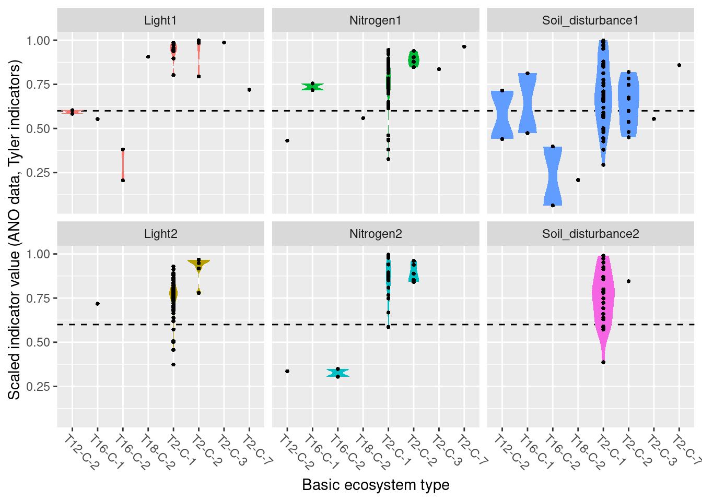
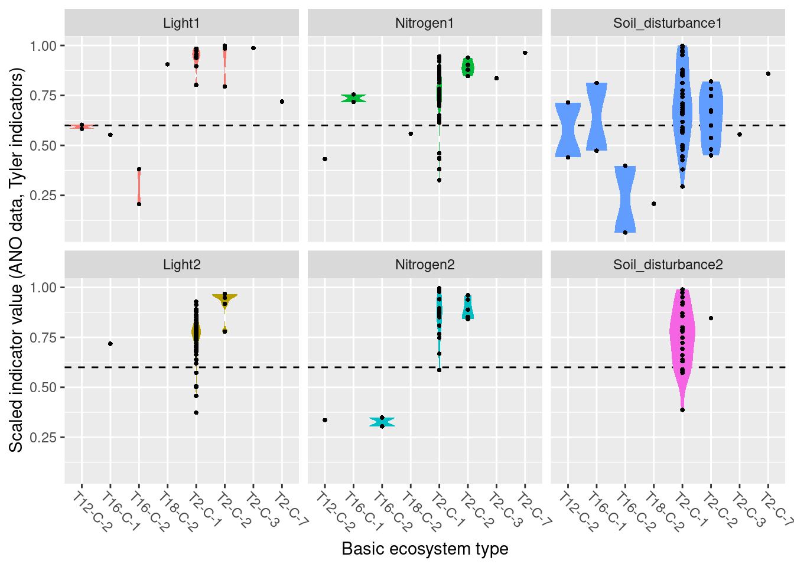
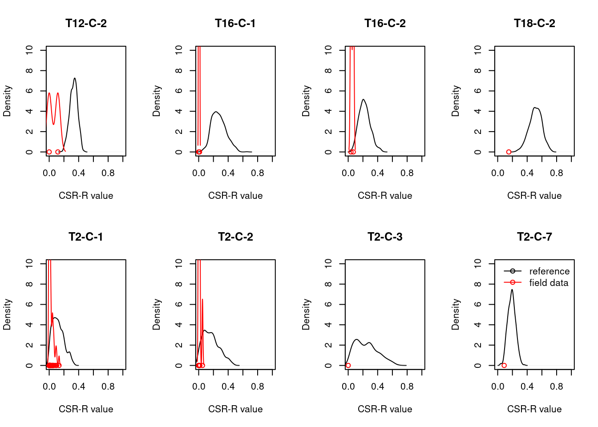

1 Functional plant indicators, naturally open ecosystems below the tree line (Grime’s CSR values, Light, Nitrogen, Soil disturbance)
Author and date:
Joachim Töpper
August 2023
| Ecosystem | Økologisk.egenskap | ECT.class |
|---|---|---|
| naturally open below tree line | Primærproduksjon | Functional state characteristic |
| naturally open below tree line | Abiotiske forhold | Functional state characteristic |
1.1 Introduction
Functional plant indicators can be used to describe the functional signature of plant communities by calculating community-weighted means of plant indicator values for plant communities (Diekmann 2003). The functional signature of plant communities may be indicative of ecosystem identity, depending on which functional plant indicator we look at (cf. Töpper et al. 2018). For instance, using an indicator for moisture one would find a functional signature with higher moisture values for plant communities in mires compared to e.g. grasslands or forests. Deviations in the functional signature of such an indicator beyond a certain range of indicator values (as there of course is natural variation of functional signatures within an ecosystem type) may be related to a reduction in ecological condition. Here, we combine functional plant indicator data with field sampled plant community data from the Norwegian nature monitoring programs ANO (Tingstad et al. 2019) and GRUK (Evju et al. 2020) for naturally open ecosystems below tree line (abbreviated as ‘nat-open’ henceforth). We calculate the functional signature of plant communities in the monitored sites with respect to Grime’s CSR values, light, nitrogen, and soil disturbance. These functional signatures are then compared to reference distributions of functional signature, separately for each nat-open ecosystem type, calculated from ‘generalized species lists’ developed for ecosystem types in the Norwegian categorization system for eco-diversity (Halvorsen et al. 2020). These plant functional condition indicators are developed following the principles and technical protocol of the IBECA framework (Jakobsson et al. 2021, Töpper & Jakobsson 2021). Note that deviations from the reference may occur in both directions, e.g. the nitrogen signature from the testing data may be higher or lower than in the reference. Deviations in these two directions indicate very different environmental phenomena and thus have to be treated separately. Therefore, we develop two condition indicators for each functional plant indicator, a lower one and an upper one (see further down for more details).
1.2 About the underlying data
In the ‘functional plant indicator’ project for nat-open ecosystems, we use five sets of data for building indicators for ecological condition:
- as test data we use plant community data from (1) the ANO monitoring scheme (cf. Tingstad et al. 2019) and (2) from the GRUK monitoring scheme (cf. Evju et al. 2020)
- as reference data we use (3) generalized species lists developed by Evju et al. (2023) for nat-open ecosystem types
- Swedish plant indicator data for light, nitrogen, and soil disturbance from Tyler et al. (2021), and (5) Grime’s CSR values for plant species’ strategies (towards competition, stress, and ruderal conditions)
ANO monitoring data: ANO stands for ‘areal-representativ naturovervåking’, i.e. ‘area representative nature monitoring’. 1000 sites are randomly distributed across mainland Norway and visited within a 5-year cycle. Each ANO site spans a 500 x 500 m grid cell, and the data collection at each ANO site includes up to 18 evenly distributed vegetation analyses in 1 x 1 m plots (up to 18, because some of these evenly distributed points may be in water or otherwise inaccessible). For the vegetation analyses, the cover of each vascular plant species in the plot is recorded. Every vegetation analysis is accompanied by an assessment of the ecosystem the plot lies in, including ecosystem type and some additional variables related to ecosystem-specific drivers of state. In the analysis in this document, we only use the plots which were classified as one of the nat-open ecosystem types in the Norwegian categorization system for eco-diversity (NiN) and which are not registered as lying in mountain areas above the tree line. In the analysis in this document, we use the data available on Miljødirektoratets kartkatalog (https://kartkatalog.miljodirektoratet.no/Dataset/Details/2054), which comprises data from the first three ANO-years, 2019-2021, and a total of 8887 plots in 498 sites.
GRUK monitoring data GRUK stands for ‘Grunnlendt åpen kalkmark’, and represents a monitoring of open, limestone rich ecosystems with soils too shallow for forest establishment. The limestone rich focus of the scheme is motivated from a high biodiversity value and places all monitoring sites in an area around the Oslofjord. As of spring 2023, the GRUK data comprise 596 vegetation plots in 146 sites, all of which are mapped to the ecosystem type “åpen grunnlendt mark” (T2) and therein to the limestone-rich subtypes T2-C-7 and T2-C-8 in the Norwegian classification system for ecosystem types. The vegetation analysis in GRUK records percent cover for every species of vascular plants in 1 m^2 plots. In addition, a range of site variables related to ecosystem-specific drivers of state are recorded. In the analysis in this document, we use all GRUK monitoring data, which span the years 2020-22. The 2022 data also include an assessment of site condition, which is included in the analysis of results in this document. In the future, these data data may become available in Miljødirektoratets kartkatalog.
NiN reference data: The generalized species lists underlying the ecosystem categorization in NiN represent expert-compiled species lists based on empirical evidence from the literature and expert knowledge of the systems and their species. In these lists, every species is assigned an abundance value on a 6-step scale, with each step representing a range for the ‘expected combination of frequency and cover’ of occurrence (1: < 1/32, 2: 1/32 - 1/8 , 3: 1/8 - 3/8, 4: 3/8 - 4/5, 5: 3/8 - 4/5 + dominance, 6: > 4/5). For the purpose of this project, these steps are simplified to maximum ‘expected combination of frequency and cover’, whereby steps 4 & 5 are assigned 0.6 and 0.8, respectively, in order to distinguish between them.
The Swedish plant indicator set published by Tyler et al. (2021) contains a large collection of plant indicators based on the Swedish flora, which is well representative of the Norwegian flora as well. From this set, we decided to include indicator data for light, moisture, pH, nitrogen, phosphorus, grazing_mowing, and soil disturbance for semi-natural ecosystems, as these are thought to be subject to potential change due to abandonment, drainage/flooding, pollution, and erosion.
Grime’s system of plant strategy scores (Grime 1974) comprises relative (too one another) scores for the competition-, stress-, and disturbance(“ruderality”)-related life strategy of plant species. In the analysis in this document, we use all three variables, C, S and R, as different pressures acting on the ecosystem might change every one of the strategies (e.g. alien species for competition, climate change for stress, land use change for ruderality).
1.2.1 Representativity in time and space
For nat-open ecosystems, the ANO data in this analysis contain 143 plots in 52 sites, in principle distributed randomly across the country. As nat-open ecosystems occur more often in certain regions of Norway than in others, the amount of plots and sites is not equal among Norway’s five regions. The 143 plots are distributed across regions in the following way:
- Northern Norway: 29
- Central Norway: 39
- Eastern Norway: 34
- Western Norway: 24
- Southern Norway: 17
For GRUK, this analysis covers 1103 plots in 146 sites.
The 1103 plots are distributed across regions in the following way:
- Northern Norway: 0
- Central Norway: 0
- Eastern Norway: 1042
- Western Norway: 0
- Southern Norway: 61
1.2.2 Temporal coverage
The ANO evaluation data cover the first three years, 2019-2021, of the first 5-year-cycle in the ANO monitoring scheme. GRUK covers 2020-2022. Thus, there is no actual time series to these data, and the indicator evaluation does therefore not include any temporal analyses.
1.3 Collinearities with other indicators
1.4 Reference state and values
1.4.1 Reference state
The reference state is defined via the functional signature of the generalized species lists for NiN ecosystem types (see also Töpper et al. 2018). For the nat-open ecosystem types these lists have been newly prepared by Evju et al. (2023). By bootstrapping the species lists (see details further below) and calculating community-weighted means of functional plant indicators for every re-sampled community, we describe the reference state as a distribution of indicator values for each respective plant functional indicator. These distributions are calculated for minor ecosystem types (“grunntyper” or “kartleggingsenheter” at a 1:5000 mapping scale) within the major ecosystem types (hovedtyper) in NiN. A more extensive discussion on the use of reference communities can be found in Jakobsson et al. (2020).
1.4.2 Reference values, thresholds for defining good ecological condition, minimum and/or maximum values
In this analysis, we derive scaling values from statistical (here, non-parametric) distributions (see Jakobsson et al. 2010). For each ecosystem sub-type and plant functional indicator, the reference value is defined as the median value of the indicator value distribution. As in most cases the distributions naturally are two-sided (but see the Heat-requirement indicator in the mountain assessment for an example of a one-sided functional plant indicator, Framstad et al. 2022), and deviation from the optimal state thus may occur in both direction (e.g. indicating too low or too high pH), we need to define two threshold values for good ecological condition as well as both a minimum and maximum value. In line with previous assessments of ecological condition for Norwegian forests and mountains, we define a lower and an upper threshold value via the 95% confidence interval of the reference distribution, i.e. its 0.025 and 0.975 quantiles. The minimum and maximum values are given by the minimum and maximum of the possible indicator values for each respective plant functional indicator. For details on the scaling principles in IBECA, please see Töpper & Jakobsson (2021).
1.5 Uncertainties
We can calculate a mean indicator value (after scaling) for every region (or any other delimited area of interest) as well as its corresponding standard error as a measure of spatial uncertainty for a geographical area.
1.6 References
Diekmann, M. 2003. Species indicator values as an important tool in applied plant ecology - a review. Basic and Applied Ecology 4: 493-506, doi:10.1078/1439-1791-00185
Evju, M., Stabbetorp, O.E., Olsen, S.L., Bratli, H., Often, A. & Bakkestuen, V. 2020. Dry calcareous grasslands in the Oslofjord region. A test of monitoring protocols and results for 2020. NINA Report 1910. Norwegian Institute for Nature Research.
Evju, M., Stabbetorp, O.E., Olsen, S.L., Bratli, … . 2023. Generalized species lists for naturally open ecosystem types below the tree line in Norway. in prep.
Framstad, E., Kolstad, A. L., Nybø, S., Töpper, J. & Vandvik, V. 2022. The condition of forest and mountain ecosystems in Norway. Assessment by the IBECA method. NINA Report 2100. Norwegian Institute for Nature Research.
Grime J.P. 1974. Vegetation classification by reference to strategies. Nature 250(5461):26-31.
Halvorsen, R., Skarpaas, O., Bryn, A., Bratli, H., Erikstad, L., Simensen, T., & Lieungh, E. (2020). Towards a systematics of ecodiversity: The EcoSyst framework. Global Ecology and Biogeography, 29(11), 1887-1906. doi:10.1111/geb.13164
Jakobsson, S., Töpper, J.P., Evju, M., Framstad, E., Lyngstad, A., Pedersen, B., Sickel, H., Sverdrup-Thygeson, A., Vandvik. V., Velle, L.G., Aarrestad, P.A. & Nybø, S. 2020. Setting reference levels and limits for good ecological condition in terrestrial ecosystems. Insights from a case study based on the IBECA approach. Ecological Indicators 116: 106492.
Jakobsson, S., Evju, M., Framstad, E., Imbert, A., Lyngstad, A., Sickel, H., Sverdrup-Thygeson, A., Töpper, J., Vandvik, V., Velle, L.G., Aarrestad, P.A. & Nybø, S. 2021. An index-based assessment of ecological condition and its links to international frameworks. Ecological Indicators 124: 107252.
Tingstad, L., Evju, M., Sickel, H., & Töpper, J. 2019. Utvikling av nasjonal arealrepresentativ naturovervåking (ANO). Forslag til gjennomføring, protokoller og kostnadsvurderinger med utgangspunkt i erfaringer fra uttesting i Trøndelag. NINA Rapport 1642.
Töpper, J. & Jakobsson, S. 2021. The Index-Based Ecological Condition Assessment (IBECA) - Technical protocol, version 1.0. NINA Report 1967. Norwegian Institute for Nature Research.
Töpper, J., Velle, L.G. & Vandvik, V. 2018. Developing a method for assessment of ecological state based on indicator values after Ellenberg and Grime (revised edition). NINA Report 1529b. Norwegian Institute for Nature Research.
Tyler, T., Herbertsson, L., Olofsson, J., & Olsson, P. A. 2021. Ecological indicator and traits values for Swedish vascular plants. Ecological In-dicators, 120. doi:10.1016/j.ecolind.2020.106923
1.7 Analyses
1.7.1 Data sets
ANO data: ANO.sp contains the species data, ANO.geo contains site data.
GRUK data: GRUK.species contains the species data, GRUK.variable contains site data, GRUK2021.condition contains a field-based condition assessment from the 2021 season.
Plant indicators from Tyler et al. (2021) and Grime (1974) are saved as ind.Tyler and ind.Grime.
Generalized species lists (reference communities): natopen_NiN_ref contains the reference species lists, natopen_NiN_ref_spInfo contains additional taxonomic information for each species.
1.7.1.1 Data handling
- Checking for errors
- Checking species nomenclature in the different species lists to make species and indicator data possible to merge
- Merging indicator data with monitoring data and indicator data with reference data (not shown here, but documented in the code)
leaving us with the monitoring data including plant indicators (ANO.sp.ind, GRUK.species.ind) and the reference data including plant indicators (NiN.natopen.cov)
head(ANO.sp.ind)## Species art_dekning
## 1 Abies alba 0
## 2 Abies alba 0
## 3 Abies alba 0
## 4 Abies alba 0
## 5 Abies alba 0
## 6 Abies alba 0
## ParentGlobalID
## 1 {CB1796B9-01F5-4109-B44E-4582CA855F93}
## 2 {AB9ED5C2-E906-4C73-B543-EC6CB28B39D5}
## 3 {A660C3D8-C8DD-414D-8B70-80F9A284E34E}
## 4 {142D1B0E-32EE-4FD8-AA12-DBF3A0B2DC54}
## 5 {B7DD61EE-A113-4486-A4B8-D50ACAAC648B}
## 6 {32A9B462-5483-4D47-ADAF-78F11AF201AA}
## CC SS RR Light Nitrogen
## 1 NA NA NA 2 5
## 2 NA NA NA 2 5
## 3 NA NA NA 2 5
## 4 NA NA NA 2 5
## 5 NA NA NA 2 5
## 6 NA NA NA 2 5
## Soil_disturbance
## 1 1
## 2 1
## 3 1
## 4 1
## 5 1
## 6 1head(GRUK.species.ind)## ParentGlobalID
## 1 002ee3d0-f9f5-4760-9580-b71d56748595
## 2 002ee3d0-f9f5-4760-9580-b71d56748595
## 3 002ee3d0-f9f5-4760-9580-b71d56748595
## 4 002ee3d0-f9f5-4760-9580-b71d56748595
## 5 002ee3d0-f9f5-4760-9580-b71d56748595
## 6 002ee3d0-f9f5-4760-9580-b71d56748595
## Species
## 1 Poa compressa
## 2 Equisetum sylvaticum
## 3 Polygonatum odoratum
## 4 Geranium sanguineum
## 5 Origanum vulgare
## 6 Sonchus asper
## art_dekning CC
## 1 0.1 0.1666667
## 2 0.1 0.4166667
## 3 1.0 0.5000000
## 4 0.1 0.1666667
## 5 3.0 0.4166667
## 6 1.0 0.2500000
## SS RR Light
## 1 0.4166667 0.4166667 7
## 2 0.1666667 0.4166667 4
## 3 0.5000000 0.0000000 5
## 4 0.6666667 0.1666667 5
## 5 0.4166667 0.1666667 6
## 6 0.0000000 0.7500000 6
## Nitrogen Soil_disturbance
## 1 4 5
## 2 3 2
## 3 3 5
## 4 3 2
## 5 4 4
## 6 7 9
## year Flate_ID Punkt_ID
## 1 2020 44-1 NA
## 2 2020 44-1 NA
## 3 2020 44-1 NA
## 4 2020 44-1 NA
## 5 2020 44-1 NA
## 6 2020 44-1 NA
## Total dekning % av karplanter registert
## 1 5.3
## 2 5.3
## 3 5.3
## 4 5.3
## 5 5.3
## 6 5.3
## Dekning % av karplanter i feltsjikt
## 1 4
## 2 4
## 3 4
## 4 4
## 5 4
## 6 4
## Dekning % av moser
## 1 0
## 2 0
## 3 0
## 4 0
## 5 0
## 6 0
## Dekning % av lav
## 1 0
## 2 0
## 3 0
## 4 0
## 5 0
## 6 0
## Dekning % av strø
## 1 8
## 2 8
## 3 8
## 4 8
## 5 8
## 6 8
## Dekning % av bar jord/grus/stein/berg
## 1 99
## 2 99
## 3 99
## 4 99
## 5 99
## 6 99
## Kartleggingsenhet
## 1 T2-C-7
## 2 T2-C-7
## 3 T2-C-7
## 4 T2-C-7
## 5 T2-C-7
## 6 T2-C-7
## Spor etter ferdsel med tunge kjøretøy (%)
## 1 0
## 2 0
## 3 0
## 4 0
## 5 0
## 6 0
## Spor etter slitasje og slitasjebetinget erosjon (%)
## 1 0
## 2 0
## 3 0
## 4 0
## 5 0
## 6 0
## Dekning % av nakent berg
## 1 7
## 2 7
## 3 7
## 4 7
## 5 7
## 6 7
## Menneskeskapte objekter i sirkelen?
## 1 nei
## 2 nei
## 3 nei
## 4 nei
## 5 nei
## 6 nei
## Total dekning % av vedplanter i feltsjikt
## 1 5
## 2 5
## 3 5
## 4 5
## 5 5
## 6 5
## Dekning % av busker i busksjikt
## 1 3
## 2 3
## 3 3
## 4 3
## 5 3
## 6 3
## Dekning % av tresjikt
## 1 8
## 2 8
## 3 8
## 4 8
## 5 8
## 6 8
## Dekning % av problemarter
## 1 NA
## 2 NA
## 3 NA
## 4 NA
## 5 NA
## 6 NA
## Total dekning % av fremmede arter
## 1 0
## 2 0
## 3 0
## 4 0
## 5 0
## 6 0
## x y
## 1 10.73183 59.94773
## 2 10.73183 59.94773
## 3 10.73183 59.94773
## 4 10.73183 59.94773
## 5 10.73183 59.94773
## 6 10.73183 59.94773
## geometry
## 1 POINT (261665.7 6653279)
## 2 POINT (261665.7 6653279)
## 3 POINT (261665.7 6653279)
## 4 POINT (261665.7 6653279)
## 5 POINT (261665.7 6653279)
## 6 POINT (261665.7 6653279)head(NiN.natopen.cov)## sp
## 1 Achillea millefolium
## 2 Achillea ptarmica
## 3 Acinos arvensis
## 4 Aconitum septentrionale
## 5 Actaea spicata
## 6 Agrimonia eupatoria
## T1_toerkeutsatte_berg
## 1 NA
## 2 NA
## 3 NA
## 4 NA
## 5 NA
## 6 NA
## T1-C-11 T1-C-12
## 1 NA NA
## 2 NA NA
## 3 NA NA
## 4 NA NA
## 5 NA NA
## 6 NA NA
## T1_fosseberg T2-C-1 T2-C-2
## 1 NA NA NA
## 2 NA NA NA
## 3 NA NA NA
## 4 NA NA NA
## 5 NA NA NA
## 6 NA NA NA
## T2-C-3 T2-C-4 T2-C-5 T2-C-6
## 1 NA NA NA NA
## 2 NA NA NA NA
## 3 NA NA NA NA
## 4 NA NA NA NA
## 5 NA NA NA NA
## 6 NA NA 0.375 NA
## T2-C-7 T2-C-8 T2-C-7_BN
## 1 NA NA NA
## 2 NA NA NA
## 3 0.375 0.375 0.37500
## 4 NA NA NA
## 5 NA NA NA
## 6 0.375 NA 0.03125
## T2-C-8_BN T8-C-1 T8-C-2
## 1 NA NA NA
## 2 NA NA NA
## 3 0.37500 NA NA
## 4 NA NA NA
## 5 NA NA NA
## 6 0.03125 NA NA
## T8-C-3 T11-C-1 T11-C-2
## 1 0.375 NA NA
## 2 NA NA NA
## 3 NA NA NA
## 4 NA NA NA
## 5 NA NA NA
## 6 NA NA NA
## T12-C-1 T12-C-2 T13-C-1
## 1 NA 0.12500 NA
## 2 NA 0.03125 NA
## 3 NA NA NA
## 4 NA NA NA
## 5 NA NA NA
## 6 NA NA NA
## T13-C-2 T13-C-3 T13-C-4
## 1 NA NA NA
## 2 NA NA NA
## 3 NA NA 0.03125
## 4 NA NA NA
## 5 NA NA NA
## 6 NA NA NA
## T13-C-5 T13-C-6 T13-C-7
## 1 NA NA NA
## 2 NA NA NA
## 3 0.03125 0.03125 0.03125
## 4 NA NA NA
## 5 NA NA NA
## 6 NA NA NA
## T13-C-8 T13-C-9 T13-C-10
## 1 NA NA NA
## 2 NA NA NA
## 3 0.03125 0.03125 NA
## 4 NA NA NA
## 5 NA NA NA
## 6 NA NA NA
## T13-C-11 T13-C-12 T13-C-13
## 1 NA NA NA
## 2 NA NA NA
## 3 NA NA NA
## 4 NA NA NA
## 5 NA NA NA
## 6 NA NA NA
## T13-C-14 T13-C-15 T15
## 1 NA NA NA
## 2 NA NA NA
## 3 NA NA NA
## 4 NA NA NA
## 5 NA NA NA
## 6 NA NA NA
## T15-Bratli21 T16-C-1
## 1 0.03125 0.375
## 2 NA NA
## 3 NA NA
## 4 0.03125 NA
## 5 NA NA
## 6 NA NA
## T16-C-2 T16-C-3 T16-C-4
## 1 0.375 NA NA
## 2 NA NA NA
## 3 NA NA 0.125
## 4 NA NA NA
## 5 NA 0.125 0.125
## 6 NA NA NA
## T16-C-5 T16-C-6 T16-C-7
## 1 NA NA NA
## 2 NA NA NA
## 3 NA NA NA
## 4 NA NA NA
## 5 NA NA NA
## 6 NA NA NA
## T18-C-1 T18-C-2 T18-C-3
## 1 NA NA NA
## 2 0.125 NA NA
## 3 NA NA NA
## 4 NA NA NA
## 5 NA NA NA
## 6 NA NA NA
## T18-C-4 T21-C-1 T21-C-2
## 1 NA 0.125 0.375
## 2 NA NA NA
## 3 NA NA NA
## 4 NA NA NA
## 5 NA NA NA
## 6 NA NA NA
## T21-C-3 T21-C-4 T21-7
## 1 0.6 0.375 0.375
## 2 NA NA NA
## 3 NA NA NA
## 4 NA NA NA
## 5 NA NA NA
## 6 NA NA NA
## T24-C-1_samlet
## 1 NA
## 2 NA
## 3 NA
## 4 NA
## 5 NA
## 6 NA
## T24-C-2_samlet
## 1 NA
## 2 NA
## 3 NA
## 4 NA
## 5 NA
## 6 NA
## T24-C-1_Moere
## 1 NA
## 2 NA
## 3 NA
## 4 NA
## 5 NA
## 6 NA
## T24-C-1_Troendelag
## 1 NA
## 2 NA
## 3 NA
## 4 NA
## 5 NA
## 6 NA
## T24-C-1_Troms
## 1 NA
## 2 NA
## 3 NA
## 4 NA
## 5 NA
## 6 NA
## T24-C-1_Finnmark
## 1 0.125
## 2 NA
## 3 NA
## 4 NA
## 5 NA
## 6 NA
## T24-C-2_Moere
## 1 NA
## 2 NA
## 3 NA
## 4 NA
## 5 NA
## 6 NA
## T24-C-2_Troendelag
## 1 NA
## 2 NA
## 3 NA
## 4 NA
## 5 NA
## 6 NA
## T24-C-2_Troms
## 1 NA
## 2 NA
## 3 NA
## 4 NA
## 5 NA
## 6 NA
## T24-C-2_Finnmark T29-C-1
## 1 0.375 NA
## 2 NA NA
## 3 NA NA
## 4 NA NA
## 5 NA NA
## 6 NA NA
## T29-C-2 T29-C-3 T29-C-4
## 1 0.80000 NA 0.375
## 2 0.03125 NA NA
## 3 NA 0.6 0.375
## 4 NA NA NA
## 5 NA NA NA
## 6 0.12500 NA NA
## T29-C-5 T29-C-6
## 1 0.03125 NA
## 2 NA NA
## 3 NA NA
## 4 NA NA
## 5 NA NA
## 6 NA NA
## Phylum
## 1 Magnoliophyta
## 2 Magnoliophyta
## 3 Magnoliophyta
## 4 Magnoliophyta
## 5 Magnoliophyta
## 6 Magnoliophyta
## sp.orig
## 1 Achillea millefolium
## 2 Achillea ptarmica
## 3 Acinos arvensis
## 4 Aconitum septentrionale
## 5 Actaea spicata
## 6 Agrimonia eupatoria
## CC SS
## 1 0.3333333 0.3333333
## 2 0.4166667 0.4166667
## 3 0.1666667 0.4166667
## 4 NA NA
## 5 NA NA
## 6 0.3333333 0.3333333
## RR Light Nitrogen
## 1 0.3333333 6 5
## 2 0.1666667 5 4
## 3 0.4166667 7 3
## 4 NA 4 7
## 5 NA 2 6
## 6 0.3333333 5 6
## Soil_disturbance
## 1 2
## 2 2
## 3 7
## 4 2
## 5 3
## 6 5For each ecosystem type with a NiN species list, we can calculate a community weighted mean (CWM) for the relevant functional plant indicators. For semi-natural ecosystems, we are testing “Light”, “Moisture”, “Soil_reaction_pH”, “Nitrogen”, “Phosphorus”, “Grazing_mowing”, and “Soil_disturbance”. In order to get distributions of CWMs rather than one single value (for comparison with the empirical testing data), the NiN lists can be bootstrapped.
1.7.1.1.1 bootstrap function for frequency abundance
- function to calculate community weighted means of selected indicator values (ind)
- for species lists (sp) with given abundances in percent (or on a scale from 0 to 1) in one or more ‘sites’ (abun)
- with a given number of iterations (iter),
- with species given a certain minimum abundance occurring in all bootstraps (obl), and
- with a given re-sampling ratio of the original species list (rat)
- in every bootstrap iteration the abundance of the sampled species can be randomly changed by a limited amount if wished by introducing a re-sampling of abundance values from adjacent abundance steps with a certain probability (var.abun)
Running the bootstraps
colnames(NiN.natopen)
# 1st column is the species
# 6th-71st column is the abundances of sp in different ecosystem types
# 74th-79th column is the indicator values of the respective species
# we choose 1000 iterations
# species with abundance 1 (i.e. a max of 100%, must be included in each sample)
# each sample re-samples 1/3 of the number of species
# the abundance of the re-sampled species may vary (see bootstrap function for details)
natopen.ref.cov <- indBoot.freq(sp=NiN.natopen.cov[,1],abun=NiN.natopen.cov[,6:71],ind=NiN.natopen.cov[,74:79],iter=1000,obl=1,rat=1/3,var.abun=T)
### fixing NaN's
for (i in 1:length(natopen.ref.cov) ) {
for (j in 1:ncol(natopen.ref.cov[[i]]) ) {
v <- natopen.ref.cov[[i]][,j]
v[is.nan(v)] <- NA
natopen.ref.cov[[i]][,j] <- v
}
}head(natopen.ref.cov[[1]])## T2-C-1 T2-C-2
## 1 0.2845850 0.25000000
## 2 0.3818565 0.16025641
## 3 0.1697966 0.21428571
## 4 0.2393868 0.15476190
## 5 0.2500000 0.25000000
## 6 0.2619048 0.06862745
## T2-C-3 T2-C-4
## 1 0.14655172 0.10347682
## 2 0.12820513 0.13008130
## 3 0.24583333 0.15540016
## 4 0.14665866 0.19340378
## 5 0.05496922 0.08085612
## 6 0.01739736 0.05701754
## T2-C-5 T2-C-6
## 1 0.2346319 0.089953944
## 2 0.2382169 0.103709127
## 3 0.2293046 0.047180939
## 4 0.2066667 0.301147228
## 5 0.1104183 0.001539646
## 6 0.2588652 0.083333333
## T2-C-7 T2-C-8
## 1 0.2057258 0.2837079
## 2 0.2114830 0.2331540
## 3 0.2519630 0.3000000
## 4 0.3008681 0.3027884
## 5 0.1829332 0.2220369
## 6 0.1803109 0.2382713
## T2-C-7_BN T2-C-8_BN
## 1 0.1569223 0.3247954
## 2 0.1974646 0.2087871
## 3 0.2314341 0.1643737
## 4 0.1949171 0.2540587
## 5 0.1870552 0.1070675
## 6 0.1813302 0.2170433
## T8-C-1 T8-C-2 T8-C-3
## 1 0.0923913 NA 0.1410256
## 2 0.2026144 NA 0.1923077
## 3 0.2500000 NA 0.0600000
## 4 0.1666667 NA 0.1178862
## 5 0.1616162 NA 0.1933333
## 6 0.2516340 NA 0.2891156
## T11-C-1 T11-C-2 T12-C-1
## 1 NA NA NA
## 2 NA NA NA
## 3 NA NA NA
## 4 NA NA NA
## 5 NA NA NA
## 6 NA NA NA
## T12-C-2 T13-C-1 T13-C-2
## 1 0.5449800 NA NA
## 2 0.3095506 NA NA
## 3 0.3425983 NA NA
## 4 0.3918308 NA NA
## 5 0.4647327 NA NA
## 6 0.5083175 NA NA
## T13-C-3 T13-C-4 T13-C-5
## 1 NA NA 0.13888889
## 2 NA NA 0.13888889
## 3 NA NA 0.16666667
## 4 NA NA 0.21747967
## 5 NA NA 0.09482759
## 6 NA NA 0.18965517
## T13-C-6 T13-C-7
## 1 0.08849281 0.51706827
## 2 0.18140868 0.01683381
## 3 0.16211790 0.03132648
## 4 0.23989899 0.54421769
## 5 0.21226415 0.02777778
## 6 0.11049107 0.39393939
## T13-C-8 T13-C-9
## 1 0.16666667 0.2987805
## 2 0.20114943 0.2385057
## 3 0.16666667 0.1944444
## 4 0.08130081 0.1760037
## 5 0.06504065 0.2919800
## 6 0.08130081 0.2146465
## T13-C-10 T13-C-11 T13-C-12
## 1 NA NA NA
## 2 NA NA NA
## 3 NA NA NA
## 4 NA NA NA
## 5 NA NA NA
## 6 NA NA NA
## T13-C-13 T13-C-14 T13-C-15
## 1 NA NA NA
## 2 NA NA NA
## 3 NA NA NA
## 4 NA NA NA
## 5 NA NA NA
## 6 NA NA NA
## T15 T15-Bratli21
## 1 0.3645833 0.2551183
## 2 0.3339489 0.2872909
## 3 0.3210682 0.2770032
## 4 0.3649425 0.3413580
## 5 0.4716981 0.3022203
## 6 0.3946790 0.2649355
## T16-C-1 T16-C-2
## 1 0.2226776 0.2198670
## 2 0.3341544 0.3596491
## 3 0.2708333 0.2613169
## 4 0.2552083 0.1635802
## 5 0.2407407 0.2693429
## 6 0.3182898 0.3535714
## T16-C-3 T16-C-4
## 1 0.2577736 0.3085355
## 2 0.2608512 0.1820631
## 3 0.3069184 0.2842679
## 4 0.2956989 0.2115575
## 5 0.2246497 0.1650106
## 6 0.2408487 0.2112299
## T16-C-5 T16-C-6
## 1 0.6531548 0.5458443
## 2 0.4814815 0.4051164
## 3 0.3727735 0.3267196
## 4 0.5041667 0.3931981
## 5 0.4586247 0.3076377
## 6 0.4064327 0.4531083
## T16-C-7 T18-C-1
## 1 0.3305085 0.6448475
## 2 0.2500000 0.3070175
## 3 0.2916667 0.4373479
## 4 0.2083333 0.3030303
## 5 0.3218391 0.5825617
## 6 0.2166667 0.3549383
## T18-C-2 T18-C-3 T18-C-4
## 1 0.40948276 NA NA
## 2 0.26190476 NA NA
## 3 0.23289183 NA NA
## 4 0.34612310 NA NA
## 5 0.51851852 NA NA
## 6 0.07929472 NA NA
## T21-C-1 T21-C-2
## 1 0.3663522 0.3309456
## 2 0.5610200 0.4441581
## 3 0.2731569 0.3973696
## 4 0.3060429 0.3239783
## 5 0.4566886 0.4012757
## 6 0.2535817 0.3604806
## T21-C-3 T21-C-4
## 1 0.2259268 0.2647892
## 2 0.2566483 0.3367434
## 3 0.1865861 0.2837838
## 4 0.2458751 0.3696404
## 5 0.1777217 0.4740468
## 6 0.3903275 0.2679592
## T21-7 T24-C-1_samlet
## 1 0.1665567 0.5044695
## 2 0.3191248 0.5767588
## 3 0.1247113 0.6266280
## 4 0.2437276 0.4711472
## 5 0.2944641 0.5371597
## 6 0.1722222 0.4268812
## T24-C-2_samlet
## 1 0.1912136
## 2 0.3276727
## 3 0.3867521
## 4 0.3026242
## 5 0.2251286
## 6 0.4085174
## T24-C-1_Moere
## 1 0.5350369
## 2 0.4834191
## 3 0.5691266
## 4 0.3687776
## 5 0.4222182
## 6 0.7216956
## T24-C-1_Troendelag
## 1 0.5065958
## 2 0.2782205
## 3 0.6114393
## 4 0.7293266
## 5 0.6171679
## 6 0.6029216
## T24-C-1_Troms
## 1 0.3224095
## 2 0.4330668
## 3 0.4215686
## 4 0.4587379
## 5 0.2330508
## 6 0.4210111
## T24-C-1_Finnmark
## 1 0.3252841
## 2 0.3094435
## 3 0.3496066
## 4 0.3119735
## 5 0.2825630
## 6 0.3598690
## T24-C-2_Moere
## 1 0.54901961
## 2 0.44444444
## 3 0.21217105
## 4 0.52314815
## 5 0.22222222
## 6 0.08496732
## T24-C-2_Troendelag
## 1 0.4368867
## 2 0.4541667
## 3 0.3388889
## 4 0.3593750
## 5 0.2401961
## 6 0.6305257
## T24-C-2_Troms
## 1 0.1675386
## 2 0.3560888
## 3 0.3933333
## 4 0.3803165
## 5 0.1985816
## 6 0.2599206
## T24-C-2_Finnmark T29-C-1
## 1 0.2533113 0.4000000
## 2 0.5125369 0.3782051
## 3 0.3229491 0.5128205
## 4 0.3774663 0.3484848
## 5 0.4353499 0.5894309
## 6 0.2934783 0.4429825
## T29-C-2 T29-C-3
## 1 0.2106061 0.1629790
## 2 0.4335956 0.1383435
## 3 0.1657688 0.1739201
## 4 0.2364865 0.1962779
## 5 0.2523840 0.1219386
## 6 0.2853027 0.1561419
## T29-C-4 T29-C-5
## 1 0.3508230 0.5268670
## 2 0.2924837 0.4388802
## 3 0.2762557 0.6453824
## 4 0.2156863 0.4484266
## 5 0.3700565 0.4876657
## 6 0.3246124 0.4409456
## T29-C-6
## 1 0.3347458
## 2 0.3237705
## 3 0.2886335
## 4 0.5535714
## 5 0.4451220
## 6 0.5347222This results in an R-list with a slot for every selected indicator, and in every slot there’s a data frame with as many columns as there are NiN species lists and as many rows as there were iterations in the bootstrap. Next, we need to derive scaling values from these bootstrap-lists (the columns) for every mapping unit in NiN. Here, we define things in the following way:
- Median = reference values
- 0.025 and 0.975 quantiles = lower and upper limit values
- min and max of the respective indicator’s scale = min/max values
## [1] "T2-C-1"
## [2] "T2-C-2"
## [3] "T2-C-3"
## [4] "T2-C-4"
## [5] "T2-C-5"
## [6] "T2-C-6"
## [7] "T2-C-7"
## [8] "T2-C-8"
## [9] "T2-C-7_BN"
## [10] "T2-C-8_BN"
## [11] "T8-C-1"
## [12] "T8-C-2"
## [13] "T8-C-3"
## [14] "T11-C-1"
## [15] "T11-C-2"
## [16] "T12-C-1"
## [17] "T12-C-2"
## [18] "T13-C-1"
## [19] "T13-C-2"
## [20] "T13-C-3"
## [21] "T13-C-4"
## [22] "T13-C-5"
## [23] "T13-C-6"
## [24] "T13-C-7"
## [25] "T13-C-8"
## [26] "T13-C-9"
## [27] "T13-C-10"
## [28] "T13-C-11"
## [29] "T13-C-12"
## [30] "T13-C-13"
## [31] "T13-C-14"
## [32] "T13-C-15"
## [33] "T15"
## [34] "T15-Bratli21"
## [35] "T16-C-1"
## [36] "T16-C-2"
## [37] "T16-C-3"
## [38] "T16-C-4"
## [39] "T16-C-5"
## [40] "T16-C-6"
## [41] "T16-C-7"
## [42] "T18-C-1"
## [43] "T18-C-2"
## [44] "T18-C-3"
## [45] "T18-C-4"
## [46] "T21-C-1"
## [47] "T21-C-2"
## [48] "T21-C-3"
## [49] "T21-C-4"
## [50] "T21-7"
## [51] "T24-C-1_samlet"
## [52] "T24-C-2_samlet"
## [53] "T24-C-1_Moere"
## [54] "T24-C-1_Troendelag"
## [55] "T24-C-1_Troms"
## [56] "T24-C-1_Finnmark"
## [57] "T24-C-2_Moere"
## [58] "T24-C-2_Troendelag"
## [59] "T24-C-2_Troms"
## [60] "T24-C-2_Finnmark"
## [61] "T29-C-1"
## [62] "T29-C-2"
## [63] "T29-C-3"
## [64] "T29-C-4"
## [65] "T29-C-5"
## [66] "T29-C-6"## [1] "T2-C-1"
## [2] "T2-C-2"
## [3] "T2-C-3"
## [4] "T2-C-4"
## [5] "T2-C-5"
## [6] "T2-C-6"
## [7] "T2-C-7"
## [8] "T2-C-8"
## [9] "T2-C-7_BN"
## [10] "T2-C-8_BN"
## [11] "T8-C-1"
## [12] "T8-C-2"
## [13] "T8-C-3"
## [14] "T11-C-1"
## [15] "T11-C-2"
## [16] "T12-C-1"
## [17] "T12-C-2"
## [18] "T13-C-1"
## [19] "T13-C-2"
## [20] "T13-C-3"
## [21] "T13-C-4"
## [22] "T13-C-5"
## [23] "T13-C-6"
## [24] "T13-C-7"
## [25] "T13-C-8"
## [26] "T13-C-9"
## [27] "T13-C-10"
## [28] "T13-C-11"
## [29] "T13-C-12"
## [30] "T13-C-13"
## [31] "T13-C-14"
## [32] "T13-C-15"
## [33] "T15"
## [34] "T15-Bratli21"
## [35] "T16-C-1"
## [36] "T16-C-2"
## [37] "T16-C-3"
## [38] "T16-C-4"
## [39] "T16-C-5"
## [40] "T16-C-6"
## [41] "T16-C-7"
## [42] "T18-C-1"
## [43] "T18-C-2"
## [44] "T18-C-3"
## [45] "T18-C-4"
## [46] "T21-C-1"
## [47] "T21-C-2"
## [48] "T21-C-3"
## [49] "T21-C-4"
## [50] "T21-7"
## [51] "T24-C-1_samlet"
## [52] "T24-C-2_samlet"
## [53] "T24-C-1_Moere"
## [54] "T24-C-1_Troendelag"
## [55] "T24-C-1_Troms"
## [56] "T24-C-1_Finnmark"
## [57] "T24-C-2_Moere"
## [58] "T24-C-2_Troendelag"
## [59] "T24-C-2_Troms"
## [60] "T24-C-2_Finnmark"
## [61] "T29-C-1"
## [62] "T29-C-2"
## [63] "T29-C-3"
## [64] "T29-C-4"
## [65] "T29-C-5"
## [66] "T29-C-6"## V1 V2
## 1 0.08766832 0.21872555
## 2 0.05382353 0.19671091
## 3 0.03753882 0.17141992
## 4 0.02523850 0.12230736
## 5 0.10919903 0.20897488
## 6 0.01706577 0.09912008
## 7 0.15620537 0.25719120
## 8 0.18061362 0.25018911
## 9 0.10224655 0.20957553
## 10 0.07427100 0.17847283
## 11 0.09300746 0.21488110
## 12 NA NA
## 13 0.02525253 0.15415885
## 14 NA NA
## 15 NA NA
## 16 NA NA
## 17 0.29060240 0.40597466
## 18 NA NA
## 19 NA NA
## 20 NA NA
## 21 NA NA
## 22 0.08130081 0.16666667
## 23 0.04382799 0.18405797
## 24 0.01230389 0.25000000
## 25 0.08130081 0.18292683
## 26 0.12457912 0.20114943
## 27 NA NA
## 28 NA NA
## 29 NA NA
## 30 NA NA
## 31 NA NA
## 32 NA NA
## 33 0.24499059 0.36111111
## 34 0.25060905 0.29379425
## 35 0.16234299 0.25693620
## 36 0.16357485 0.28641287
## 37 0.14811000 0.23896199
## 38 0.14713231 0.25527663
## 39 0.27060801 0.41732082
## 40 0.28533155 0.45307881
## 41 0.09935897 0.30450974
## 42 0.24251435 0.44391944
## 43 0.16710152 0.34454332
## 44 NA NA
## 45 NA NA
## 46 0.18793380 0.37662986
## 47 0.30130530 0.39989343
## 48 0.17262831 0.27771966
## 49 0.19120164 0.34709012
## 50 0.08967567 0.25972603
## 51 0.30003882 0.48453591
## 52 0.15736725 0.34885701
## V3 V4
## 1 0.3888889 0.496031746
## 2 0.2843487 0.428523810
## 3 0.3920588 0.329815301
## 4 0.1929744 0.327729100
## 5 0.3380892 0.360701100
## 6 0.2559378 0.435242751
## 7 0.3652055 0.441457929
## 8 0.3382194 0.470574683
## 9 0.3680637 0.462116259
## 10 0.3162418 0.463891580
## 11 0.3695652 0.155108025
## 12 NA NA
## 13 0.2878788 0.346414806
## 14 NA NA
## 15 NA NA
## 16 NA NA
## 17 0.5529830 0.155818787
## 18 NA NA
## 19 NA NA
## 20 NA NA
## 21 NA NA
## 22 0.2682927 0.405053266
## 23 0.3087121 0.346037866
## 24 0.5833333 0.207409555
## 25 0.3191057 0.416666667
## 26 0.3516536 0.326849857
## 27 NA NA
## 28 NA NA
## 29 NA NA
## 30 NA NA
## 31 NA NA
## 32 NA NA
## 33 0.5139583 0.233295494
## 34 0.3820887 0.435684880
## 35 0.3766281 0.279155891
## 36 0.4200559 0.310350085
## 37 0.3637605 0.378845415
## 38 0.3812905 0.376717790
## 39 0.6757135 0.164448153
## 40 0.6803745 0.195725145
## 41 0.5769421 0.222222223
## 42 0.6280931 0.164932380
## 43 0.5191094 0.034689455
## 44 NA NA
## 45 NA NA
## 46 0.5758055 0.030067155
## 47 0.4976052 0.345761792
## 48 0.3958725 0.343577594
## 49 0.5028986 0.125478216
## 50 0.4213119 0.201083409
## 51 0.6419169 0.024354072
## 52 0.5663918 0.002446965
## V5 V6
## 1 0.67063492 0.7447321
## 2 0.65859351 0.7797668
## 3 0.56470638 0.7936851
## 4 0.56582778 0.7665337
## 5 0.52346972 0.6916941
## 6 0.58410216 0.7786876
## 7 0.55090793 0.6738322
## 8 0.57752100 0.6974140
## 9 0.57902923 0.7524761
## 10 0.60815835 0.7909958
## 11 0.33333333 0.5245331
## 12 NA NA
## 13 0.56818182 0.8055556
## 14 NA NA
## 15 NA NA
## 16 NA NA
## 17 0.25215467 0.3795203
## 18 NA NA
## 19 NA NA
## 20 NA NA
## 21 NA NA
## 22 0.58333333 0.8211382
## 23 0.50505301 0.6409212
## 24 0.57507473 0.9799197
## 25 0.61111111 0.8373984
## 26 0.55962644 0.7223420
## 27 NA NA
## 28 NA NA
## 29 NA NA
## 30 NA NA
## 31 NA NA
## 32 NA NA
## 33 0.40638940 0.5608236
## 34 0.53193205 0.5983096
## 35 0.47113943 0.6395535
## 36 0.48381744 0.6822968
## 37 0.49905906 0.6267098
## 38 0.52809611 0.6744551
## 39 0.34122203 0.5311081
## 40 0.35596430 0.5174475
## 41 0.43693694 0.6388889
## 42 0.35012504 0.5758203
## 43 0.14347518 0.2708425
## 44 NA NA
## 45 NA NA
## 46 0.27795685 0.5039078
## 47 0.44474045 0.5660524
## 48 0.46802992 0.6043919
## 49 0.36723930 0.5924905
## 50 0.42210487 0.7521036
## 51 0.11784811 0.2372093
## 52 0.07598784 0.2706975
## V7 V8
## 1 0.005735723 0.1120774
## 2 0.000000000 0.1597796
## 3 0.025321138 0.2359968
## 4 0.120574240 0.3157958
## 5 0.110983810 0.2541142
## 6 0.105434160 0.2957560
## 7 0.091546770 0.1914806
## 8 0.063927305 0.1672794
## 9 0.079745942 0.1926481
## 10 0.086004879 0.1957826
## 11 0.270036376 0.4404762
## 12 NA NA
## 13 0.134583333 0.2727273
## 14 NA NA
## 15 NA NA
## 16 NA NA
## 17 0.219522914 0.3350895
## 18 NA NA
## 19 NA NA
## 20 NA NA
## 21 NA NA
## 22 0.055555556 0.2357724
## 23 0.185886752 0.3148770
## 24 0.005020080 0.1224490
## 25 0.032520325 0.1944444
## 26 0.126375456 0.2347561
## 27 NA NA
## 28 NA NA
## 29 NA NA
## 30 NA NA
## 31 NA NA
## 32 NA NA
## 33 0.126061321 0.2291667
## 34 0.132100093 0.1703649
## 35 0.109208892 0.2639093
## 36 0.088539009 0.2158678
## 37 0.135197412 0.2567565
## 38 0.105401613 0.2161034
## 39 0.077056285 0.2169817
## 40 0.066329446 0.1792464
## 41 0.070914473 0.2432432
## 42 0.065786151 0.2005232
## 43 0.333205756 0.5148968
## 44 NA NA
## 45 NA NA
## 46 0.041433288 0.3179337
## 47 0.070192195 0.1516556
## 48 0.141816620 0.2483754
## 49 0.099946196 0.2991857
## 50 0.124964235 0.3083632
## 51 0.229556384 0.3944126
## 52 0.313574049 0.5493960
## V9 V10
## 1 0.2870716 2.834613
## 2 0.4084967 3.330579
## 3 0.5696107 3.156486
## 4 0.5338759 4.606769
## 5 0.4559565 4.453310
## 6 0.5040567 4.712980
## 7 0.2923935 4.862638
## 8 0.2924579 4.984373
## 9 0.3330141 4.701733
## 10 0.3493089 4.956422
## 11 0.6581973 4.415000
## 12 NA NA
## 13 0.4356260 4.816806
## 14 NA NA
## 15 NA NA
## 16 NA NA
## 17 0.4297591 5.162242
## 18 NA NA
## 19 NA NA
## 20 NA NA
## 21 NA NA
## 22 0.3821839 2.804878
## 23 0.4666543 4.294758
## 24 0.3413906 3.036145
## 25 0.3678862 3.333333
## 26 0.3679465 4.242424
## 27 NA NA
## 28 NA NA
## 29 NA NA
## 30 NA NA
## 31 NA NA
## 32 NA NA
## 33 0.3338492 3.420904
## 34 0.2101719 3.762917
## 35 0.4881055 4.279944
## 36 0.3912413 4.477555
## 37 0.3992098 4.193298
## 38 0.3386715 4.286509
## 39 0.3704522 4.227666
## 40 0.3124922 4.050876
## 41 0.4722917 4.564932
## 42 0.3851419 4.617633
## 43 0.6731078 4.511375
## 44 NA NA
## 45 NA NA
## 46 0.7070889 4.781331
## 47 0.2346538 5.788984
## 48 0.3762084 4.872919
## 49 0.4475722 5.043468
## 50 0.4529543 5.105344
## 51 0.6167403 4.945497
## 52 0.8096174 4.529733
## V11 V12 V13
## 1 4.476190 5.389009 1.666667
## 2 4.880952 6.285714 1.235294
## 3 4.814227 6.011573 1.916576
## 4 5.737986 6.666667 1.818617
## 5 5.247586 6.009061 2.647226
## 6 5.721032 6.641097 2.463591
## 7 5.539673 6.282584 2.838162
## 8 5.680120 6.113998 2.727575
## 9 5.551775 6.342671 2.963358
## 10 5.741075 6.514043 2.998198
## 11 5.407785 6.333673 3.632551
## 12 NA NA NA
## 13 5.971691 6.769318 2.333333
## 14 NA NA NA
## 15 NA NA NA
## 16 NA NA NA
## 17 5.429241 5.705945 3.722993
## 18 NA NA NA
## 19 NA NA NA
## 20 NA NA NA
## 21 NA NA NA
## 22 4.844828 6.451293 3.000000
## 23 5.210157 6.570921 2.999832
## 24 4.258065 6.015283 1.845266
## 25 5.000000 6.568966 3.000000
## 26 5.197828 6.128086 2.422414
## 27 NA NA NA
## 28 NA NA NA
## 29 NA NA NA
## 30 NA NA NA
## 31 NA NA NA
## 32 NA NA NA
## 33 4.434783 5.000000 4.681067
## 34 4.104077 4.410747 4.693984
## 35 5.000000 5.654848 2.510243
## 36 5.101882 5.756967 2.522576
## 37 4.921653 5.716938 2.822584
## 38 4.960372 5.627944 2.657396
## 39 4.847752 5.361825 4.159384
## 40 4.726896 5.272624 4.027343
## 41 5.428571 6.428968 2.917080
## 42 5.160636 5.685656 3.354103
## 43 5.208685 6.091255 4.317818
## 44 NA NA NA
## 45 NA NA NA
## 46 6.316456 6.960317 3.580813
## 47 6.246117 6.731249 4.259699
## 48 5.464732 6.041276 3.111765
## 49 5.513848 5.978263 1.981775
## 50 5.727173 6.695663 2.530103
## 51 5.632478 6.356044 5.136618
## 52 5.579246 6.759379 4.574493
## V14 V15 V16
## 1 2.600000 3.717514 2.054054
## 2 2.333333 3.470588 2.000000
## 3 3.275345 4.450445 2.110920
## 4 3.000000 4.319588 3.385196
## 5 3.556649 4.822016 2.976882
## 6 3.173645 4.187576 3.409615
## 7 3.369092 4.049901 2.972562
## 8 3.094241 3.496544 3.947285
## 9 3.348366 3.825764 2.758179
## 10 3.372142 3.815734 3.155511
## 11 4.842105 6.076923 2.682520
## 12 NA NA NA
## 13 4.000000 5.480121 2.499745
## 14 NA NA NA
## 15 NA NA NA
## 16 NA NA NA
## 17 4.576458 5.442697 2.486205
## 18 NA NA NA
## 19 NA NA NA
## 20 NA NA NA
## 21 NA NA NA
## 22 3.804878 5.634146 1.780488
## 23 3.925928 4.612375 2.744836
## 24 3.489796 6.000000 2.333163
## 25 3.706897 4.804878 2.568966
## 26 3.656566 4.677020 2.585859
## 27 NA NA NA
## 28 NA NA NA
## 29 NA NA NA
## 30 NA NA NA
## 31 NA NA NA
## 32 NA NA NA
## 33 5.597872 6.511206 1.671995
## 34 5.173043 5.651100 1.896863
## 35 3.773156 4.928668 2.380929
## 36 3.740369 4.880149 2.302267
## 37 3.761088 4.495396 2.808479
## 38 3.635066 4.433828 2.974881
## 39 5.327030 6.326673 2.184895
## 40 5.281717 6.555162 2.195281
## 41 4.125000 5.700357 2.222101
## 42 4.747317 5.881711 1.831488
## 43 5.290616 6.354692 3.237734
## 44 NA NA NA
## 45 NA NA NA
## 46 5.775142 8.484127 2.160844
## 47 4.912874 5.755123 2.975682
## 48 3.898314 4.765610 2.652346
## 49 3.889614 5.489779 2.203449
## 50 3.672057 4.754403 2.168740
## 51 6.428801 7.627357 2.701516
## 52 6.587573 8.351996 2.832766
## V17 V18
## 1 3.475383 4.809472
## 2 3.846154 6.500000
## 3 3.677023 5.589687
## 4 5.333333 7.119332
## 5 4.272900 5.555851
## 6 5.145120 6.823120
## 7 4.031481 4.994144
## 8 5.060515 5.910220
## 9 4.107361 5.479319
## 10 4.321785 5.578610
## 11 4.428571 6.470861
## 12 NA NA
## 13 3.900000 5.483190
## 14 NA NA
## 15 NA NA
## 16 NA NA
## 17 3.259703 4.238748
## 18 NA NA
## 19 NA NA
## 20 NA NA
## 21 NA NA
## 22 3.195122 5.439024
## 23 4.501678 6.289810
## 24 4.000000 5.757576
## 25 3.431034 5.439024
## 26 4.068966 5.711590
## 27 NA NA
## 28 NA NA
## 29 NA NA
## 30 NA NA
## 31 NA NA
## 32 NA NA
## 33 2.340711 3.281270
## 34 2.177064 2.625147
## 35 3.402128 4.625284
## 36 3.253731 4.430699
## 37 3.773531 4.921042
## 38 3.978725 5.140815
## 39 3.079133 4.308136
## 40 2.894178 4.023432
## 41 3.900226 6.250000
## 42 2.498695 4.353716
## 43 5.170566 6.784790
## 44 NA NA
## 45 NA NA
## 46 4.508028 8.460971
## 47 3.722446 4.647642
## 48 3.340359 4.316478
## 49 3.351073 5.322171
## 50 3.117752 5.087087
## 51 4.729340 7.042814
## 52 6.345262 8.671942
## NiN
## 1 T2-C-1
## 2 T2-C-2
## 3 T2-C-3
## 4 T2-C-4
## 5 T2-C-5
## 6 T2-C-6
## 7 T2-C-7
## 8 T2-C-8
## 9 T2-C-7_BN
## 10 T2-C-8_BN
## 11 T8-C-1
## 12 T8-C-2
## 13 T8-C-3
## 14 T11-C-1
## 15 T11-C-2
## 16 T12-C-1
## 17 T12-C-2
## 18 T13-C-1
## 19 T13-C-2
## 20 T13-C-3
## 21 T13-C-4
## 22 T13-C-5
## 23 T13-C-6
## 24 T13-C-7
## 25 T13-C-8
## 26 T13-C-9
## 27 T13-C-10
## 28 T13-C-11
## 29 T13-C-12
## 30 T13-C-13
## 31 T13-C-14
## 32 T13-C-15
## 33 T15
## 34 T15-Bratli21
## 35 T16-C-1
## 36 T16-C-2
## 37 T16-C-3
## 38 T16-C-4
## 39 T16-C-5
## 40 T16-C-6
## 41 T16-C-7
## 42 T18-C-1
## 43 T18-C-2
## 44 T18-C-3
## 45 T18-C-4
## 46 T21-C-1
## 47 T21-C-2
## 48 T21-C-3
## 49 T21-C-4
## 50 T21-7
## 51 T24-C-1_samlet
## 52 T24-C-2_samlet
## [ reached 'max' / getOption("max.print") -- omitted 14 rows ]## [1] 66 19## V1 V2 V3 V4 V5
## 1 0.09 0.22 0.39 0.50 0.67
## 2 0.05 0.20 0.28 0.43 0.66
## 3 0.04 0.17 0.39 0.33 0.56
## 4 0.03 0.12 0.19 0.33 0.57
## 5 0.11 0.21 0.34 0.36 0.52
## 6 0.02 0.10 0.26 0.44 0.58
## 7 0.16 0.26 0.37 0.44 0.55
## 8 0.18 0.25 0.34 0.47 0.58
## 9 0.10 0.21 0.37 0.46 0.58
## 10 0.07 0.18 0.32 0.46 0.61
## 11 0.09 0.21 0.37 0.16 0.33
## 12 NA NA NA NA NA
## 13 0.03 0.15 0.29 0.35 0.57
## 14 NA NA NA NA NA
## 15 NA NA NA NA NA
## 16 NA NA NA NA NA
## 17 0.29 0.41 0.55 0.16 0.25
## 18 NA NA NA NA NA
## 19 NA NA NA NA NA
## 20 NA NA NA NA NA
## 21 NA NA NA NA NA
## 22 0.08 0.17 0.27 0.41 0.58
## 23 0.04 0.18 0.31 0.35 0.51
## 24 0.01 0.25 0.58 0.21 0.58
## 25 0.08 0.18 0.32 0.42 0.61
## 26 0.12 0.20 0.35 0.33 0.56
## 27 NA NA NA NA NA
## 28 NA NA NA NA NA
## 29 NA NA NA NA NA
## 30 NA NA NA NA NA
## 31 NA NA NA NA NA
## 32 NA NA NA NA NA
## 33 0.24 0.36 0.51 0.23 0.41
## 34 0.25 0.29 0.38 0.44 0.53
## 35 0.16 0.26 0.38 0.28 0.47
## 36 0.16 0.29 0.42 0.31 0.48
## 37 0.15 0.24 0.36 0.38 0.50
## 38 0.15 0.26 0.38 0.38 0.53
## 39 0.27 0.42 0.68 0.16 0.34
## 40 0.29 0.45 0.68 0.20 0.36
## 41 0.10 0.30 0.58 0.22 0.44
## 42 0.24 0.44 0.63 0.16 0.35
## 43 0.17 0.34 0.52 0.03 0.14
## 44 NA NA NA NA NA
## 45 NA NA NA NA NA
## 46 0.19 0.38 0.58 0.03 0.28
## 47 0.30 0.40 0.50 0.35 0.44
## 48 0.17 0.28 0.40 0.34 0.47
## 49 0.19 0.35 0.50 0.13 0.37
## 50 0.09 0.26 0.42 0.20 0.42
## 51 0.30 0.48 0.64 0.02 0.12
## 52 0.16 0.35 0.57 0.00 0.08
## 53 0.27 0.48 0.66 0.02 0.12
## 54 0.31 0.56 0.74 0.01 0.12
## 55 0.21 0.39 0.58 0.02 0.17
## V6 V7 V8 V9 V10
## 1 0.74 0.01 0.11 0.29 2.83
## 2 0.78 0.00 0.16 0.41 3.33
## 3 0.79 0.03 0.24 0.57 3.16
## 4 0.77 0.12 0.32 0.53 4.61
## 5 0.69 0.11 0.25 0.46 4.45
## 6 0.78 0.11 0.30 0.50 4.71
## 7 0.67 0.09 0.19 0.29 4.86
## 8 0.70 0.06 0.17 0.29 4.98
## 9 0.75 0.08 0.19 0.33 4.70
## 10 0.79 0.09 0.20 0.35 4.96
## 11 0.52 0.27 0.44 0.66 4.42
## 12 NA NA NA NA NA
## 13 0.81 0.13 0.27 0.44 4.82
## 14 NA NA NA NA NA
## 15 NA NA NA NA NA
## 16 NA NA NA NA NA
## 17 0.38 0.22 0.34 0.43 5.16
## 18 NA NA NA NA NA
## 19 NA NA NA NA NA
## 20 NA NA NA NA NA
## 21 NA NA NA NA NA
## 22 0.82 0.06 0.24 0.38 2.80
## 23 0.64 0.19 0.31 0.47 4.29
## 24 0.98 0.01 0.12 0.34 3.04
## 25 0.84 0.03 0.19 0.37 3.33
## 26 0.72 0.13 0.23 0.37 4.24
## 27 NA NA NA NA NA
## 28 NA NA NA NA NA
## 29 NA NA NA NA NA
## 30 NA NA NA NA NA
## 31 NA NA NA NA NA
## 32 NA NA NA NA NA
## 33 0.56 0.13 0.23 0.33 3.42
## 34 0.60 0.13 0.17 0.21 3.76
## 35 0.64 0.11 0.26 0.49 4.28
## 36 0.68 0.09 0.22 0.39 4.48
## 37 0.63 0.14 0.26 0.40 4.19
## 38 0.67 0.11 0.22 0.34 4.29
## 39 0.53 0.08 0.22 0.37 4.23
## 40 0.52 0.07 0.18 0.31 4.05
## 41 0.64 0.07 0.24 0.47 4.56
## 42 0.58 0.07 0.20 0.39 4.62
## 43 0.27 0.33 0.51 0.67 4.51
## 44 NA NA NA NA NA
## 45 NA NA NA NA NA
## 46 0.50 0.04 0.32 0.71 4.78
## 47 0.57 0.07 0.15 0.23 5.79
## 48 0.60 0.14 0.25 0.38 4.87
## 49 0.59 0.10 0.30 0.45 5.04
## 50 0.75 0.12 0.31 0.45 5.11
## 51 0.24 0.23 0.39 0.62 4.95
## 52 0.27 0.31 0.55 0.81 4.53
## 53 0.29 0.15 0.37 0.64 4.76
## 54 0.29 0.13 0.30 0.60 4.71
## 55 0.32 0.28 0.41 0.70 4.52
## V11 V12 V13 V14 V15
## 1 4.48 5.39 1.67 2.60 3.72
## 2 4.88 6.29 1.24 2.33 3.47
## 3 4.81 6.01 1.92 3.28 4.45
## 4 5.74 6.67 1.82 3.00 4.32
## 5 5.25 6.01 2.65 3.56 4.82
## 6 5.72 6.64 2.46 3.17 4.19
## 7 5.54 6.28 2.84 3.37 4.05
## 8 5.68 6.11 2.73 3.09 3.50
## 9 5.55 6.34 2.96 3.35 3.83
## 10 5.74 6.51 3.00 3.37 3.82
## 11 5.41 6.33 3.63 4.84 6.08
## 12 NA NA NA NA NA
## 13 5.97 6.77 2.33 4.00 5.48
## 14 NA NA NA NA NA
## 15 NA NA NA NA NA
## 16 NA NA NA NA NA
## 17 5.43 5.71 3.72 4.58 5.44
## 18 NA NA NA NA NA
## 19 NA NA NA NA NA
## 20 NA NA NA NA NA
## 21 NA NA NA NA NA
## 22 4.84 6.45 3.00 3.80 5.63
## 23 5.21 6.57 3.00 3.93 4.61
## 24 4.26 6.02 1.85 3.49 6.00
## 25 5.00 6.57 3.00 3.71 4.80
## 26 5.20 6.13 2.42 3.66 4.68
## 27 NA NA NA NA NA
## 28 NA NA NA NA NA
## 29 NA NA NA NA NA
## 30 NA NA NA NA NA
## 31 NA NA NA NA NA
## 32 NA NA NA NA NA
## 33 4.43 5.00 4.68 5.60 6.51
## 34 4.10 4.41 4.69 5.17 5.65
## 35 5.00 5.65 2.51 3.77 4.93
## 36 5.10 5.76 2.52 3.74 4.88
## 37 4.92 5.72 2.82 3.76 4.50
## 38 4.96 5.63 2.66 3.64 4.43
## 39 4.85 5.36 4.16 5.33 6.33
## 40 4.73 5.27 4.03 5.28 6.56
## 41 5.43 6.43 2.92 4.12 5.70
## 42 5.16 5.69 3.35 4.75 5.88
## 43 5.21 6.09 4.32 5.29 6.35
## 44 NA NA NA NA NA
## 45 NA NA NA NA NA
## 46 6.32 6.96 3.58 5.78 8.48
## 47 6.25 6.73 4.26 4.91 5.76
## 48 5.46 6.04 3.11 3.90 4.77
## 49 5.51 5.98 1.98 3.89 5.49
## 50 5.73 6.70 2.53 3.67 4.75
## 51 5.63 6.36 5.14 6.43 7.63
## 52 5.58 6.76 4.57 6.59 8.35
## 53 5.59 6.45 4.96 6.44 7.66
## 54 5.57 6.54 4.62 6.21 7.29
## 55 5.34 6.42 4.65 6.11 7.66
## V16 V17 V18
## 1 2.05 3.48 4.81
## 2 2.00 3.85 6.50
## 3 2.11 3.68 5.59
## 4 3.39 5.33 7.12
## 5 2.98 4.27 5.56
## 6 3.41 5.15 6.82
## 7 2.97 4.03 4.99
## 8 3.95 5.06 5.91
## 9 2.76 4.11 5.48
## 10 3.16 4.32 5.58
## 11 2.68 4.43 6.47
## 12 NA NA NA
## 13 2.50 3.90 5.48
## 14 NA NA NA
## 15 NA NA NA
## 16 NA NA NA
## 17 2.49 3.26 4.24
## 18 NA NA NA
## 19 NA NA NA
## 20 NA NA NA
## 21 NA NA NA
## 22 1.78 3.20 5.44
## 23 2.74 4.50 6.29
## 24 2.33 4.00 5.76
## 25 2.57 3.43 5.44
## 26 2.59 4.07 5.71
## 27 NA NA NA
## 28 NA NA NA
## 29 NA NA NA
## 30 NA NA NA
## 31 NA NA NA
## 32 NA NA NA
## 33 1.67 2.34 3.28
## 34 1.90 2.18 2.63
## 35 2.38 3.40 4.63
## 36 2.30 3.25 4.43
## 37 2.81 3.77 4.92
## 38 2.97 3.98 5.14
## 39 2.18 3.08 4.31
## 40 2.20 2.89 4.02
## 41 2.22 3.90 6.25
## 42 1.83 2.50 4.35
## 43 3.24 5.17 6.78
## 44 NA NA NA
## 45 NA NA NA
## 46 2.16 4.51 8.46
## 47 2.98 3.72 4.65
## 48 2.65 3.34 4.32
## 49 2.20 3.35 5.32
## 50 2.17 3.12 5.09
## 51 2.70 4.73 7.04
## 52 2.83 6.35 8.67
## 53 2.39 4.51 7.02
## 54 2.04 3.61 6.50
## 55 2.27 4.54 7.59
## [ reached 'max' / getOption("max.print") -- omitted 11 rows ]## CC_q2.5
## Min. :0.01230
## 1st Qu.:0.09051
## Median :0.16296
## Mean :0.16039
## 3rd Qu.:0.22703
## Max. :0.31163
## NA's :16
## CC_q50
## Min. :0.09912
## 1st Qu.:0.20981
## Median :0.29010
## Mean :0.30412
## 3rd Qu.:0.39772
## Max. :0.56287
## NA's :16
## CC_q97.5
## Min. :0.1930
## 1st Qu.:0.3641
## Median :0.4232
## Mean :0.4635
## 3rd Qu.:0.5780
## Max. :0.7380
## NA's :16
## SS_q2.5
## Min. :0.00000
## 1st Qu.:0.03559
## Median :0.24740
## Mean :0.23524
## 3rd Qu.:0.37831
## Max. :0.49603
## NA's :16
## SS_q50
## Min. :0.07599
## 1st Qu.:0.22153
## Median :0.45638
## Mean :0.39509
## 3rd Qu.:0.55893
## Max. :0.67063
## NA's :16
## SS_q97.5
## Min. :0.2344
## 1st Qu.:0.4025
## Median :0.6156
## Mean :0.5735
## 3rd Qu.:0.7173
## Max. :0.9799
## NA's :16
## RR_q2.5
## Min. :0.00000
## 1st Qu.:0.07245
## Median :0.12551
## Mean :0.13816
## 3rd Qu.:0.19080
## Max. :0.39653
## NA's :16
## RR_q50
## Min. :0.1121
## 1st Qu.:0.2044
## Median :0.2677
## Mean :0.2906
## 3rd Qu.:0.3666
## Max. :0.5961
## NA's :16
## RR_q97.5
## Min. :0.2102
## 1st Qu.:0.3679
## Median :0.4503
## Mean :0.4788
## 3rd Qu.:0.5952
## Max. :0.8237
## NA's :16
## Light_q2.5
## Min. :2.805
## 1st Qu.:4.231
## Median :4.547
## Mean :4.460
## 3rd Qu.:4.870
## Max. :5.789
## NA's :16
## Light_q50
## Min. :4.104
## 1st Qu.:5.000
## Median :5.418
## Mean :5.357
## 3rd Qu.:5.692
## Max. :6.316
## NA's :16
## Light_q97.5
## Min. :4.411
## 1st Qu.:5.986
## Median :6.349
## Mean :6.206
## 3rd Qu.:6.570
## Max. :6.960
## NA's :16
## Nitrogen_q2.5
## Min. :1.235
## 1st Qu.:2.608
## Median :3.056
## Mean :3.401
## 3rd Qu.:4.428
## Max. :6.278
## NA's :16
## Nitrogen_q50
## Min. :2.333
## 1st Qu.:3.614
## Median :4.062
## Mean :4.545
## 3rd Qu.:5.563
## Max. :7.633
## NA's :16
## Nitrogen_q97.5
## Min. :3.471
## 1st Qu.:4.566
## Median :5.562
## Mean :5.746
## 3rd Qu.:7.107
## Max. :8.744
## NA's :16
## Soil_disturbance_q2.5
## Min. :1.672
## 1st Qu.:2.196
## Median :2.493
## Mean :2.591
## 3rd Qu.:2.864
## Max. :5.039
## NA's :16
## Soil_disturbance_q50
## Min. :2.177
## 1st Qu.:3.409
## Median :4.050
## Mean :4.123
## 3rd Qu.:4.544
## Max. :7.117
## NA's :16
## Soil_disturbance_q97.5
## Min. :2.625
## 1st Qu.:4.939
## Median :5.651
## Mean :5.879
## 3rd Qu.:6.814
## Max. :8.826
## NA's :16
## NiN
## Length:66
## Class :character
## Mode :character
##
##
##
## ## [1] "T2-C-1"
## [2] "T2-C-2"
## [3] "T2-C-3"
## [4] "T2-C-4"
## [5] "T2-C-5"
## [6] "T2-C-6"
## [7] "T2-C-7"
## [8] "T2-C-8"
## [9] "T2-C-7_BN"
## [10] "T2-C-8_BN"
## [11] "T8-C-1"
## [12] "T8-C-2"
## [13] "T8-C-3"
## [14] "T11-C-1"
## [15] "T11-C-2"
## [16] "T12-C-1"
## [17] "T12-C-2"
## [18] "T13-C-1"
## [19] "T13-C-2"
## [20] "T13-C-3"
## [21] "T13-C-4"
## [22] "T13-C-5"
## [23] "T13-C-6"
## [24] "T13-C-7"
## [25] "T13-C-8"
## [26] "T13-C-9"
## [27] "T13-C-10"
## [28] "T13-C-11"
## [29] "T13-C-12"
## [30] "T13-C-13"
## [31] "T13-C-14"
## [32] "T13-C-15"
## [33] "T15"
## [34] "T15-Bratli21"
## [35] "T16-C-1"
## [36] "T16-C-2"
## [37] "T16-C-3"
## [38] "T16-C-4"
## [39] "T16-C-5"
## [40] "T16-C-6"
## [41] "T16-C-7"
## [42] "T18-C-1"
## [43] "T18-C-2"
## [44] "T18-C-3"
## [45] "T18-C-4"
## [46] "T21-C-1"
## [47] "T21-C-2"
## [48] "T21-C-3"
## [49] "T21-C-4"
## [50] "T21-7"
## [51] "T24-C-1_samlet"
## [52] "T24-C-2_samlet"
## [53] "T24-C-1_Moere"
## [54] "T24-C-1_Troendelag"
## [55] "T24-C-1_Troms"
## [56] "T24-C-1_Finnmark"
## [57] "T24-C-2_Moere"
## [58] "T24-C-2_Troendelag"
## [59] "T24-C-2_Troms"
## [60] "T24-C-2_Finnmark"
## [61] "T29-C-1"
## [62] "T29-C-2"
## [63] "T29-C-3"
## [64] "T29-C-4"
## [65] "T29-C-5"
## [66] "T29-C-6"## CC_q2.5 CC_q50
## 1 0.08766832 0.21872555
## 2 0.05382353 0.19671091
## 3 0.03753882 0.17141992
## 4 0.02523850 0.12230736
## 5 0.10919903 0.20897488
## 6 0.01706577 0.09912008
## 7 0.15620537 0.25719120
## 8 0.18061362 0.25018911
## 9 0.10224655 0.20957553
## 10 0.07427100 0.17847283
## 11 0.09300746 0.21488110
## 12 NA NA
## 13 0.02525253 0.15415885
## 14 NA NA
## 15 NA NA
## 16 NA NA
## 17 0.29060240 0.40597466
## 18 NA NA
## 19 NA NA
## 20 NA NA
## 21 NA NA
## 22 0.08130081 0.16666667
## 23 0.04382799 0.18405797
## 24 0.01230389 0.25000000
## 25 0.08130081 0.18292683
## 26 0.12457912 0.20114943
## 27 NA NA
## 28 NA NA
## 29 NA NA
## 30 NA NA
## 31 NA NA
## 32 NA NA
## 33 0.24499059 0.36111111
## 34 0.25060905 0.29379425
## 35 0.16234299 0.25693620
## 36 0.16357485 0.28641287
## 37 0.14811000 0.23896199
## 38 0.14713231 0.25527663
## 39 0.27060801 0.41732082
## 40 0.28533155 0.45307881
## 41 0.09935897 0.30450974
## 42 0.24251435 0.44391944
## 43 0.16710152 0.34454332
## 44 NA NA
## 45 NA NA
## 46 0.18793380 0.37662986
## 47 0.30130530 0.39989343
## 48 0.17262831 0.27771966
## 49 0.19120164 0.34709012
## 50 0.08967567 0.25972603
## 51 0.30003882 0.48453591
## 52 0.15736725 0.34885701
## CC_q97.5 SS_q2.5
## 1 0.3888889 0.496031746
## 2 0.2843487 0.428523810
## 3 0.3920588 0.329815301
## 4 0.1929744 0.327729100
## 5 0.3380892 0.360701100
## 6 0.2559378 0.435242751
## 7 0.3652055 0.441457929
## 8 0.3382194 0.470574683
## 9 0.3680637 0.462116259
## 10 0.3162418 0.463891580
## 11 0.3695652 0.155108025
## 12 NA NA
## 13 0.2878788 0.346414806
## 14 NA NA
## 15 NA NA
## 16 NA NA
## 17 0.5529830 0.155818787
## 18 NA NA
## 19 NA NA
## 20 NA NA
## 21 NA NA
## 22 0.2682927 0.405053266
## 23 0.3087121 0.346037866
## 24 0.5833333 0.207409555
## 25 0.3191057 0.416666667
## 26 0.3516536 0.326849857
## 27 NA NA
## 28 NA NA
## 29 NA NA
## 30 NA NA
## 31 NA NA
## 32 NA NA
## 33 0.5139583 0.233295494
## 34 0.3820887 0.435684880
## 35 0.3766281 0.279155891
## 36 0.4200559 0.310350085
## 37 0.3637605 0.378845415
## 38 0.3812905 0.376717790
## 39 0.6757135 0.164448153
## 40 0.6803745 0.195725145
## 41 0.5769421 0.222222223
## 42 0.6280931 0.164932380
## 43 0.5191094 0.034689455
## 44 NA NA
## 45 NA NA
## 46 0.5758055 0.030067155
## 47 0.4976052 0.345761792
## 48 0.3958725 0.343577594
## 49 0.5028986 0.125478216
## 50 0.4213119 0.201083409
## 51 0.6419169 0.024354072
## 52 0.5663918 0.002446965
## SS_q50 SS_q97.5
## 1 0.67063492 0.7447321
## 2 0.65859351 0.7797668
## 3 0.56470638 0.7936851
## 4 0.56582778 0.7665337
## 5 0.52346972 0.6916941
## 6 0.58410216 0.7786876
## 7 0.55090793 0.6738322
## 8 0.57752100 0.6974140
## 9 0.57902923 0.7524761
## 10 0.60815835 0.7909958
## 11 0.33333333 0.5245331
## 12 NA NA
## 13 0.56818182 0.8055556
## 14 NA NA
## 15 NA NA
## 16 NA NA
## 17 0.25215467 0.3795203
## 18 NA NA
## 19 NA NA
## 20 NA NA
## 21 NA NA
## 22 0.58333333 0.8211382
## 23 0.50505301 0.6409212
## 24 0.57507473 0.9799197
## 25 0.61111111 0.8373984
## 26 0.55962644 0.7223420
## 27 NA NA
## 28 NA NA
## 29 NA NA
## 30 NA NA
## 31 NA NA
## 32 NA NA
## 33 0.40638940 0.5608236
## 34 0.53193205 0.5983096
## 35 0.47113943 0.6395535
## 36 0.48381744 0.6822968
## 37 0.49905906 0.6267098
## 38 0.52809611 0.6744551
## 39 0.34122203 0.5311081
## 40 0.35596430 0.5174475
## 41 0.43693694 0.6388889
## 42 0.35012504 0.5758203
## 43 0.14347518 0.2708425
## 44 NA NA
## 45 NA NA
## 46 0.27795685 0.5039078
## 47 0.44474045 0.5660524
## 48 0.46802992 0.6043919
## 49 0.36723930 0.5924905
## 50 0.42210487 0.7521036
## 51 0.11784811 0.2372093
## 52 0.07598784 0.2706975
## RR_q2.5 RR_q50
## 1 0.005735723 0.1120774
## 2 0.000000000 0.1597796
## 3 0.025321138 0.2359968
## 4 0.120574240 0.3157958
## 5 0.110983810 0.2541142
## 6 0.105434160 0.2957560
## 7 0.091546770 0.1914806
## 8 0.063927305 0.1672794
## 9 0.079745942 0.1926481
## 10 0.086004879 0.1957826
## 11 0.270036376 0.4404762
## 12 NA NA
## 13 0.134583333 0.2727273
## 14 NA NA
## 15 NA NA
## 16 NA NA
## 17 0.219522914 0.3350895
## 18 NA NA
## 19 NA NA
## 20 NA NA
## 21 NA NA
## 22 0.055555556 0.2357724
## 23 0.185886752 0.3148770
## 24 0.005020080 0.1224490
## 25 0.032520325 0.1944444
## 26 0.126375456 0.2347561
## 27 NA NA
## 28 NA NA
## 29 NA NA
## 30 NA NA
## 31 NA NA
## 32 NA NA
## 33 0.126061321 0.2291667
## 34 0.132100093 0.1703649
## 35 0.109208892 0.2639093
## 36 0.088539009 0.2158678
## 37 0.135197412 0.2567565
## 38 0.105401613 0.2161034
## 39 0.077056285 0.2169817
## 40 0.066329446 0.1792464
## 41 0.070914473 0.2432432
## 42 0.065786151 0.2005232
## 43 0.333205756 0.5148968
## 44 NA NA
## 45 NA NA
## 46 0.041433288 0.3179337
## 47 0.070192195 0.1516556
## 48 0.141816620 0.2483754
## 49 0.099946196 0.2991857
## 50 0.124964235 0.3083632
## 51 0.229556384 0.3944126
## 52 0.313574049 0.5493960
## RR_q97.5 Light_q2.5
## 1 0.2870716 2.834613
## 2 0.4084967 3.330579
## 3 0.5696107 3.156486
## 4 0.5338759 4.606769
## 5 0.4559565 4.453310
## 6 0.5040567 4.712980
## 7 0.2923935 4.862638
## 8 0.2924579 4.984373
## 9 0.3330141 4.701733
## 10 0.3493089 4.956422
## 11 0.6581973 4.415000
## 12 NA NA
## 13 0.4356260 4.816806
## 14 NA NA
## 15 NA NA
## 16 NA NA
## 17 0.4297591 5.162242
## 18 NA NA
## 19 NA NA
## 20 NA NA
## 21 NA NA
## 22 0.3821839 2.804878
## 23 0.4666543 4.294758
## 24 0.3413906 3.036145
## 25 0.3678862 3.333333
## 26 0.3679465 4.242424
## 27 NA NA
## 28 NA NA
## 29 NA NA
## 30 NA NA
## 31 NA NA
## 32 NA NA
## 33 0.3338492 3.420904
## 34 0.2101719 3.762917
## 35 0.4881055 4.279944
## 36 0.3912413 4.477555
## 37 0.3992098 4.193298
## 38 0.3386715 4.286509
## 39 0.3704522 4.227666
## 40 0.3124922 4.050876
## 41 0.4722917 4.564932
## 42 0.3851419 4.617633
## 43 0.6731078 4.511375
## 44 NA NA
## 45 NA NA
## 46 0.7070889 4.781331
## 47 0.2346538 5.788984
## 48 0.3762084 4.872919
## 49 0.4475722 5.043468
## 50 0.4529543 5.105344
## 51 0.6167403 4.945497
## 52 0.8096174 4.529733
## Light_q50 Light_q97.5
## 1 4.476190 5.389009
## 2 4.880952 6.285714
## 3 4.814227 6.011573
## 4 5.737986 6.666667
## 5 5.247586 6.009061
## 6 5.721032 6.641097
## 7 5.539673 6.282584
## 8 5.680120 6.113998
## 9 5.551775 6.342671
## 10 5.741075 6.514043
## 11 5.407785 6.333673
## 12 NA NA
## 13 5.971691 6.769318
## 14 NA NA
## 15 NA NA
## 16 NA NA
## 17 5.429241 5.705945
## 18 NA NA
## 19 NA NA
## 20 NA NA
## 21 NA NA
## 22 4.844828 6.451293
## 23 5.210157 6.570921
## 24 4.258065 6.015283
## 25 5.000000 6.568966
## 26 5.197828 6.128086
## 27 NA NA
## 28 NA NA
## 29 NA NA
## 30 NA NA
## 31 NA NA
## 32 NA NA
## 33 4.434783 5.000000
## 34 4.104077 4.410747
## 35 5.000000 5.654848
## 36 5.101882 5.756967
## 37 4.921653 5.716938
## 38 4.960372 5.627944
## 39 4.847752 5.361825
## 40 4.726896 5.272624
## 41 5.428571 6.428968
## 42 5.160636 5.685656
## 43 5.208685 6.091255
## 44 NA NA
## 45 NA NA
## 46 6.316456 6.960317
## 47 6.246117 6.731249
## 48 5.464732 6.041276
## 49 5.513848 5.978263
## 50 5.727173 6.695663
## 51 5.632478 6.356044
## 52 5.579246 6.759379
## Nitrogen_q2.5 Nitrogen_q50
## 1 1.666667 2.600000
## 2 1.235294 2.333333
## 3 1.916576 3.275345
## 4 1.818617 3.000000
## 5 2.647226 3.556649
## 6 2.463591 3.173645
## 7 2.838162 3.369092
## 8 2.727575 3.094241
## 9 2.963358 3.348366
## 10 2.998198 3.372142
## 11 3.632551 4.842105
## 12 NA NA
## 13 2.333333 4.000000
## 14 NA NA
## 15 NA NA
## 16 NA NA
## 17 3.722993 4.576458
## 18 NA NA
## 19 NA NA
## 20 NA NA
## 21 NA NA
## 22 3.000000 3.804878
## 23 2.999832 3.925928
## 24 1.845266 3.489796
## 25 3.000000 3.706897
## 26 2.422414 3.656566
## 27 NA NA
## 28 NA NA
## 29 NA NA
## 30 NA NA
## 31 NA NA
## 32 NA NA
## 33 4.681067 5.597872
## 34 4.693984 5.173043
## 35 2.510243 3.773156
## 36 2.522576 3.740369
## 37 2.822584 3.761088
## 38 2.657396 3.635066
## 39 4.159384 5.327030
## 40 4.027343 5.281717
## 41 2.917080 4.125000
## 42 3.354103 4.747317
## 43 4.317818 5.290616
## 44 NA NA
## 45 NA NA
## 46 3.580813 5.775142
## 47 4.259699 4.912874
## 48 3.111765 3.898314
## 49 1.981775 3.889614
## 50 2.530103 3.672057
## 51 5.136618 6.428801
## 52 4.574493 6.587573
## Nitrogen_q97.5
## 1 3.717514
## 2 3.470588
## 3 4.450445
## 4 4.319588
## 5 4.822016
## 6 4.187576
## 7 4.049901
## 8 3.496544
## 9 3.825764
## 10 3.815734
## 11 6.076923
## 12 NA
## 13 5.480121
## 14 NA
## 15 NA
## 16 NA
## 17 5.442697
## 18 NA
## 19 NA
## 20 NA
## 21 NA
## 22 5.634146
## 23 4.612375
## 24 6.000000
## 25 4.804878
## 26 4.677020
## 27 NA
## 28 NA
## 29 NA
## 30 NA
## 31 NA
## 32 NA
## 33 6.511206
## 34 5.651100
## 35 4.928668
## 36 4.880149
## 37 4.495396
## 38 4.433828
## 39 6.326673
## 40 6.555162
## 41 5.700357
## 42 5.881711
## 43 6.354692
## 44 NA
## 45 NA
## 46 8.484127
## 47 5.755123
## 48 4.765610
## 49 5.489779
## 50 4.754403
## 51 7.627357
## 52 8.351996
## Soil_disturbance_q2.5
## 1 2.054054
## 2 2.000000
## 3 2.110920
## 4 3.385196
## 5 2.976882
## 6 3.409615
## 7 2.972562
## 8 3.947285
## 9 2.758179
## 10 3.155511
## 11 2.682520
## 12 NA
## 13 2.499745
## 14 NA
## 15 NA
## 16 NA
## 17 2.486205
## 18 NA
## 19 NA
## 20 NA
## 21 NA
## 22 1.780488
## 23 2.744836
## 24 2.333163
## 25 2.568966
## 26 2.585859
## 27 NA
## 28 NA
## 29 NA
## 30 NA
## 31 NA
## 32 NA
## 33 1.671995
## 34 1.896863
## 35 2.380929
## 36 2.302267
## 37 2.808479
## 38 2.974881
## 39 2.184895
## 40 2.195281
## 41 2.222101
## 42 1.831488
## 43 3.237734
## 44 NA
## 45 NA
## 46 2.160844
## 47 2.975682
## 48 2.652346
## 49 2.203449
## 50 2.168740
## 51 2.701516
## 52 2.832766
## Soil_disturbance_q50
## 1 3.475383
## 2 3.846154
## 3 3.677023
## 4 5.333333
## 5 4.272900
## 6 5.145120
## 7 4.031481
## 8 5.060515
## 9 4.107361
## 10 4.321785
## 11 4.428571
## 12 NA
## 13 3.900000
## 14 NA
## 15 NA
## 16 NA
## 17 3.259703
## 18 NA
## 19 NA
## 20 NA
## 21 NA
## 22 3.195122
## 23 4.501678
## 24 4.000000
## 25 3.431034
## 26 4.068966
## 27 NA
## 28 NA
## 29 NA
## 30 NA
## 31 NA
## 32 NA
## 33 2.340711
## 34 2.177064
## 35 3.402128
## 36 3.253731
## 37 3.773531
## 38 3.978725
## 39 3.079133
## 40 2.894178
## 41 3.900226
## 42 2.498695
## 43 5.170566
## 44 NA
## 45 NA
## 46 4.508028
## 47 3.722446
## 48 3.340359
## 49 3.351073
## 50 3.117752
## 51 4.729340
## 52 6.345262
## Soil_disturbance_q97.5
## 1 4.809472
## 2 6.500000
## 3 5.589687
## 4 7.119332
## 5 5.555851
## 6 6.823120
## 7 4.994144
## 8 5.910220
## 9 5.479319
## 10 5.578610
## 11 6.470861
## 12 NA
## 13 5.483190
## 14 NA
## 15 NA
## 16 NA
## 17 4.238748
## 18 NA
## 19 NA
## 20 NA
## 21 NA
## 22 5.439024
## 23 6.289810
## 24 5.757576
## 25 5.439024
## 26 5.711590
## 27 NA
## 28 NA
## 29 NA
## 30 NA
## 31 NA
## 32 NA
## 33 3.281270
## 34 2.625147
## 35 4.625284
## 36 4.430699
## 37 4.921042
## 38 5.140815
## 39 4.308136
## 40 4.023432
## 41 6.250000
## 42 4.353716
## 43 6.784790
## 44 NA
## 45 NA
## 46 8.460971
## 47 4.647642
## 48 4.316478
## 49 5.322171
## 50 5.087087
## 51 7.042814
## 52 8.671942
## NiN
## 1 T2-C-1
## 2 T2-C-2
## 3 T2-C-3
## 4 T2-C-4
## 5 T2-C-5
## 6 T2-C-6
## 7 T2-C-7
## 8 T2-C-8
## 9 T2-C-7_BN
## 10 T2-C-8_BN
## 11 T8-C-1
## 12 T8-C-2
## 13 T8-C-3
## 14 T11-C-1
## 15 T11-C-2
## 16 T12-C-1
## 17 T12-C-2
## 18 T13-C-1
## 19 T13-C-2
## 20 T13-C-3
## 21 T13-C-4
## 22 T13-C-5
## 23 T13-C-6
## 24 T13-C-7
## 25 T13-C-8
## 26 T13-C-9
## 27 T13-C-10
## 28 T13-C-11
## 29 T13-C-12
## 30 T13-C-13
## 31 T13-C-14
## 32 T13-C-15
## 33 T15
## 34 T15-Bratli21
## 35 T16-C-1
## 36 T16-C-2
## 37 T16-C-3
## 38 T16-C-4
## 39 T16-C-5
## 40 T16-C-6
## 41 T16-C-7
## 42 T18-C-1
## 43 T18-C-2
## 44 T18-C-3
## 45 T18-C-4
## 46 T21-C-1
## 47 T21-C-2
## 48 T21-C-3
## 49 T21-C-4
## 50 T21-7
## 51 T24-C-1_samlet
## 52 T24-C-2_samlet
## [ reached 'max' / getOption("max.print") -- omitted 14 rows ]## N1 hoved
## 1 natopen NA
## 2 natopen NA
## 3 natopen NA
## 4 natopen NA
## 5 natopen NA
## 6 natopen NA
## 7 natopen NA
## 8 natopen NA
## 9 natopen NA
## 10 natopen NA
## 11 natopen NA
## 12 natopen NA
## 13 natopen NA
## 14 natopen NA
## 15 natopen NA
## 16 natopen NA
## 17 natopen NA
## 18 natopen NA
## 19 natopen NA
## 20 natopen NA
## 21 natopen NA
## 22 natopen NA
## 23 natopen NA
## 24 natopen NA
## 25 natopen NA
## 26 natopen NA
## 27 natopen NA
## 28 natopen NA
## 29 natopen NA
## 30 natopen NA
## 31 natopen NA
## 32 natopen NA
## 33 natopen NA
## 34 natopen NA
## 35 natopen NA
## 36 natopen NA
## 37 natopen NA
## 38 natopen NA
## 39 natopen NA
## 40 natopen NA
## 41 natopen NA
## 42 natopen NA
## 43 natopen NA
## 44 natopen NA
## 45 natopen NA
## 46 natopen NA
## 47 natopen NA
## 48 natopen NA
## 49 natopen NA
## 50 natopen NA
## 51 natopen NA
## 52 natopen NA
## 53 natopen NA
## 54 natopen NA
## 55 natopen NA
## 56 natopen NA
## 57 natopen NA
## 58 natopen NA
## 59 natopen NA
## 60 natopen NA
## 61 natopen NA
## 62 natopen NA
## 63 natopen NA
## 64 natopen NA
## 65 natopen NA
## 66 natopen NA
## 67 natopen NA
## 68 natopen NA
## 69 natopen NA
## 70 natopen NA
## 71 natopen NA
## 72 natopen NA
## 73 natopen NA
## 74 natopen NA
## 75 natopen NA
## 76 natopen NA
## 77 natopen NA
## 78 natopen NA
## 79 natopen NA
## 80 natopen NA
## 81 natopen NA
## 82 natopen NA
## 83 natopen NA
## 84 natopen NA
## 85 natopen NA
## 86 natopen NA
## 87 natopen NA
## 88 natopen NA
## 89 natopen NA
## 90 natopen NA
## 91 natopen NA
## 92 natopen NA
## 93 natopen NA
## 94 natopen NA
## 95 natopen NA
## 96 natopen NA
## 97 natopen NA
## 98 natopen NA
## 99 natopen NA
## 100 natopen NA
## 101 natopen NA
## 102 natopen NA
## 103 natopen NA
## 104 natopen NA
## 105 natopen NA
## 106 natopen NA
## 107 natopen NA
## 108 natopen NA
## 109 natopen NA
## 110 natopen NA
## 111 natopen NA
## grunn county
## 1 T2-C-1 all
## 2 T2-C-1 all
## 3 T2-C-2 all
## 4 T2-C-2 all
## 5 T2-C-3 all
## 6 T2-C-3 all
## 7 T2-C-4 all
## 8 T2-C-4 all
## 9 T2-C-5 all
## 10 T2-C-5 all
## 11 T2-C-6 all
## 12 T2-C-6 all
## 13 T2-C-7 all
## 14 T2-C-7 all
## 15 T2-C-8 all
## 16 T2-C-8 all
## 17 T2-C-7_BN all
## 18 T2-C-7_BN all
## 19 T2-C-8_BN all
## 20 T2-C-8_BN all
## 21 T8-C-1 all
## 22 T8-C-1 all
## 23 T8-C-2 all
## 24 T8-C-2 all
## 25 T8-C-3 all
## 26 T8-C-3 all
## 27 T11-C-1 all
## 28 T11-C-1 all
## 29 T11-C-2 all
## 30 T11-C-2 all
## 31 T12-C-1 all
## 32 T12-C-1 all
## 33 T12-C-2 all
## 34 T12-C-2 all
## 35 T13-C-1 all
## 36 T13-C-1 all
## 37 T13-C-2 all
## 38 T13-C-2 all
## 39 T13-C-3 all
## 40 T13-C-3 all
## 41 T13-C-4 all
## 42 T13-C-4 all
## 43 T13-C-5 all
## 44 T13-C-5 all
## 45 T13-C-6 all
## 46 T13-C-6 all
## 47 T13-C-7 all
## 48 T13-C-7 all
## 49 T13-C-8 all
## 50 T13-C-8 all
## 51 T13-C-9 all
## 52 T13-C-9 all
## 53 T13-C-10 all
## 54 T13-C-10 all
## 55 T13-C-11 all
## 56 T13-C-11 all
## 57 T13-C-12 all
## 58 T13-C-12 all
## 59 T13-C-13 all
## 60 T13-C-13 all
## 61 T13-C-14 all
## 62 T13-C-14 all
## 63 T13-C-15 all
## 64 T13-C-15 all
## 65 T15 all
## 66 T15 all
## 67 T15-Bratli21 all
## 68 T15-Bratli21 all
## 69 T16-C-1 all
## 70 T16-C-1 all
## 71 T16-C-2 all
## 72 T16-C-2 all
## 73 T16-C-3 all
## 74 T16-C-3 all
## 75 T16-C-4 all
## 76 T16-C-4 all
## 77 T16-C-5 all
## 78 T16-C-5 all
## 79 T16-C-6 all
## 80 T16-C-6 all
## 81 T16-C-7 all
## 82 T16-C-7 all
## 83 T18-C-1 all
## 84 T18-C-1 all
## 85 T18-C-2 all
## 86 T18-C-2 all
## 87 T18-C-3 all
## 88 T18-C-3 all
## 89 T18-C-4 all
## 90 T18-C-4 all
## 91 T21-C-1 all
## 92 T21-C-1 all
## 93 T21-C-2 all
## 94 T21-C-2 all
## 95 T21-C-3 all
## 96 T21-C-3 all
## 97 T21-C-4 all
## 98 T21-C-4 all
## 99 T21-7 all
## 100 T21-7 all
## 101 T24-C-1_samlet all
## 102 T24-C-1_samlet all
## 103 T24-C-2_samlet all
## 104 T24-C-2_samlet all
## 105 T24-C-1_Moere all
## 106 T24-C-1_Moere all
## 107 T24-C-1_Troendelag all
## 108 T24-C-1_Troendelag all
## 109 T24-C-1_Troms all
## 110 T24-C-1_Troms all
## 111 T24-C-1_Finnmark all
## region Ind Rv
## 1 all CC1 0.21872555
## 2 all CC2 0.21872555
## 3 all CC1 0.19671091
## 4 all CC2 0.19671091
## 5 all CC1 0.17141992
## 6 all CC2 0.17141992
## 7 all CC1 0.12230736
## 8 all CC2 0.12230736
## 9 all CC1 0.20897488
## 10 all CC2 0.20897488
## 11 all CC1 0.09912008
## 12 all CC2 0.09912008
## 13 all CC1 0.25719120
## 14 all CC2 0.25719120
## 15 all CC1 0.25018911
## 16 all CC2 0.25018911
## 17 all CC1 0.20957553
## 18 all CC2 0.20957553
## 19 all CC1 0.17847283
## 20 all CC2 0.17847283
## 21 all CC1 0.21488110
## 22 all CC2 0.21488110
## 23 all CC1 NA
## 24 all CC2 NA
## 25 all CC1 0.15415885
## 26 all CC2 0.15415885
## 27 all CC1 NA
## 28 all CC2 NA
## 29 all CC1 NA
## 30 all CC2 NA
## 31 all CC1 NA
## 32 all CC2 NA
## 33 all CC1 0.40597466
## 34 all CC2 0.40597466
## 35 all CC1 NA
## 36 all CC2 NA
## 37 all CC1 NA
## 38 all CC2 NA
## 39 all CC1 NA
## 40 all CC2 NA
## 41 all CC1 NA
## 42 all CC2 NA
## 43 all CC1 0.16666667
## 44 all CC2 0.16666667
## 45 all CC1 0.18405797
## 46 all CC2 0.18405797
## 47 all CC1 0.25000000
## 48 all CC2 0.25000000
## 49 all CC1 0.18292683
## 50 all CC2 0.18292683
## 51 all CC1 0.20114943
## 52 all CC2 0.20114943
## 53 all CC1 NA
## 54 all CC2 NA
## 55 all CC1 NA
## 56 all CC2 NA
## 57 all CC1 NA
## 58 all CC2 NA
## 59 all CC1 NA
## 60 all CC2 NA
## 61 all CC1 NA
## 62 all CC2 NA
## 63 all CC1 NA
## 64 all CC2 NA
## 65 all CC1 0.36111111
## 66 all CC2 0.36111111
## 67 all CC1 0.29379425
## 68 all CC2 0.29379425
## 69 all CC1 0.25693620
## 70 all CC2 0.25693620
## 71 all CC1 0.28641287
## 72 all CC2 0.28641287
## 73 all CC1 0.23896199
## 74 all CC2 0.23896199
## 75 all CC1 0.25527663
## 76 all CC2 0.25527663
## 77 all CC1 0.41732082
## 78 all CC2 0.41732082
## 79 all CC1 0.45307881
## 80 all CC2 0.45307881
## 81 all CC1 0.30450974
## 82 all CC2 0.30450974
## 83 all CC1 0.44391944
## 84 all CC2 0.44391944
## 85 all CC1 0.34454332
## 86 all CC2 0.34454332
## 87 all CC1 NA
## 88 all CC2 NA
## 89 all CC1 NA
## 90 all CC2 NA
## 91 all CC1 0.37662986
## 92 all CC2 0.37662986
## 93 all CC1 0.39989343
## 94 all CC2 0.39989343
## 95 all CC1 0.27771966
## 96 all CC2 0.27771966
## 97 all CC1 0.34709012
## 98 all CC2 0.34709012
## 99 all CC1 0.25972603
## 100 all CC2 0.25972603
## 101 all CC1 0.48453591
## 102 all CC2 0.48453591
## 103 all CC1 0.34885701
## 104 all CC2 0.34885701
## 105 all CC1 0.48333123
## 106 all CC2 0.48333123
## 107 all CC1 0.56287224
## 108 all CC2 0.56287224
## 109 all CC1 0.39119214
## 110 all CC2 0.39119214
## 111 all CC1 0.36777152
## Gv maxmin
## 1 0.08766832 0
## 2 0.38888889 1
## 3 0.05382353 0
## 4 0.28434874 1
## 5 0.03753882 0
## 6 0.39205879 1
## 7 0.02523850 0
## 8 0.19297437 1
## 9 0.10919903 0
## 10 0.33808923 1
## 11 0.01706577 0
## 12 0.25593777 1
## 13 0.15620537 0
## 14 0.36520553 1
## 15 0.18061362 0
## 16 0.33821936 1
## 17 0.10224655 0
## 18 0.36806371 1
## 19 0.07427100 0
## 20 0.31624176 1
## 21 0.09300746 0
## 22 0.36956522 1
## 23 NA 0
## 24 NA 1
## 25 0.02525253 0
## 26 0.28787879 1
## 27 NA 0
## 28 NA 1
## 29 NA 0
## 30 NA 1
## 31 NA 0
## 32 NA 1
## 33 0.29060240 0
## 34 0.55298300 1
## 35 NA 0
## 36 NA 1
## 37 NA 0
## 38 NA 1
## 39 NA 0
## 40 NA 1
## 41 NA 0
## 42 NA 1
## 43 0.08130081 0
## 44 0.26829268 1
## 45 0.04382799 0
## 46 0.30871212 1
## 47 0.01230389 0
## 48 0.58333333 1
## 49 0.08130081 0
## 50 0.31910569 1
## 51 0.12457912 0
## 52 0.35165361 1
## 53 NA 0
## 54 NA 1
## 55 NA 0
## 56 NA 1
## 57 NA 0
## 58 NA 1
## 59 NA 0
## 60 NA 1
## 61 NA 0
## 62 NA 1
## 63 NA 0
## 64 NA 1
## 65 0.24499059 0
## 66 0.51395833 1
## 67 0.25060905 0
## 68 0.38208865 1
## 69 0.16234299 0
## 70 0.37662808 1
## 71 0.16357485 0
## 72 0.42005592 1
## 73 0.14811000 0
## 74 0.36376051 1
## 75 0.14713231 0
## 76 0.38129047 1
## 77 0.27060801 0
## 78 0.67571347 1
## 79 0.28533155 0
## 80 0.68037446 1
## 81 0.09935897 0
## 82 0.57694209 1
## 83 0.24251435 0
## 84 0.62809314 1
## 85 0.16710152 0
## 86 0.51910941 1
## 87 NA 0
## 88 NA 1
## 89 NA 0
## 90 NA 1
## 91 0.18793380 0
## 92 0.57580545 1
## 93 0.30130530 0
## 94 0.49760518 1
## 95 0.17262831 0
## 96 0.39587248 1
## 97 0.19120164 0
## 98 0.50289860 1
## 99 0.08967567 0
## 100 0.42131190 1
## 101 0.30003882 0
## 102 0.64191689 1
## 103 0.15736725 0
## 104 0.56639185 1
## 105 0.27298739 0
## 106 0.66156566 1
## 107 0.31163533 0
## 108 0.73795996 1
## 109 0.21169666 0
## 110 0.57829410 1
## 111 0.17771697 0
## [ reached 'max' / getOption("max.print") -- omitted 681 rows ]## N1
## Length:792
## Class :character
## Mode :character
##
##
##
##
## hoved
## Length:792
## Class :character
## Mode :character
##
##
##
##
## grunn
## T11-C-1 : 12
## T11-C-2 : 12
## T12-C-1 : 12
## T12-C-2 : 12
## T13-C-1 : 12
## T13-C-10: 12
## (Other) :720
## county
## Length:792
## Class :character
## Mode :character
##
##
##
##
## region
## Length:792
## Class :character
## Mode :character
##
##
##
##
## Ind
## CC1 : 66
## CC2 : 66
## Light1 : 66
## Light2 : 66
## Nitrogen1: 66
## Nitrogen2: 66
## (Other) :396
## Rv
## Min. :0.07599
## 1st Qu.:0.31409
## Median :1.42385
## Mean :2.50244
## 3rd Qu.:4.76404
## Max. :7.63252
## NA's :192
## Gv
## Min. :0.0000
## 1st Qu.:0.3156
## Median :1.1076
## Mean :2.5277
## 3rd Qu.:4.6944
## Max. :8.8259
## NA's :192
## maxmin
## Min. :0.000
## 1st Qu.:0.750
## Median :1.000
## Mean :2.583
## 3rd Qu.:2.500
## Max. :9.000
## head(natopen.ref.cov.val)## N1 hoved grunn county
## 1 natopen NA T2-C-1 all
## 2 natopen NA T2-C-1 all
## 3 natopen NA T2-C-2 all
## 4 natopen NA T2-C-2 all
## 5 natopen NA T2-C-3 all
## 6 natopen NA T2-C-3 all
## region Ind Rv
## 1 all CC1 0.2187255
## 2 all CC2 0.2187255
## 3 all CC1 0.1967109
## 4 all CC2 0.1967109
## 5 all CC1 0.1714199
## 6 all CC2 0.1714199
## Gv maxmin
## 1 0.08766832 0
## 2 0.38888889 1
## 3 0.05382353 0
## 4 0.28434874 1
## 5 0.03753882 0
## 6 0.39205879 1Once test data (ANO, GRUK) and the scaling values from the reference data are in place, we can calculate community-weighted means (CWM) of the selected indicators for the ANO and GRUK community data and scale them against the scaling values from the reference distribution. Note that we scale each ANO/GRUK plot’s CWM against either the lower threshold value and the min value OR the upper threshold value and the max value based on whether the CWM is smaller or higher than the reference value. Since the scaled values for both sides range between 0 and 1, we generate separate lower and upper condition indicators for each functional plant indicator. An ANO/GRUK plot can only have a scaled value in either the lower or the upper indicator (the other one will be ‘NA’), except for the unlikely event that the CWM exactly matches the reference value, in which case both lower and upper indicator will receive a scaled indicator value of 1.
Here is the scaling function
#### scaled values ####
r.s <- 1 # reference value
l.s <- 0.6 # limit value
a.s <- 0 # abscence of indicator, or indicator at maximum
#### function for calculating scaled values for measured value ####
## scaling function including truncation
scal <- function() {
# place to hold the result
x <- numeric()
if (maxmin < ref) {
# values >= the reference value equal 1
if (val >= ref) {x <- 1}
# values < the reference value and >= the limit value can be deducted from the linear relationship between these two
if (val < ref & val >= lim) {x <- (l.s + (val-lim) * ( (r.s-l.s) / (ref-lim) ) )}
# values < the limit value and > maxmin can be deducted from the linear relationship between these two
if (val < lim & val > maxmin) {x <- (a.s + (val-maxmin) * ( (l.s-a.s) / (lim-maxmin) ) )}
# value equals or lower than maxmin
if (val <= maxmin) {x <-0}
} else {
# values <= the reference value equal 1
if (val <= ref) {x <- 1}
# values > the reference value and <= the limit value can be deducted from the linear relationship between these two
if (val > ref & val <= lim) {x <- ( r.s - ( (r.s - l.s) * (val - ref) / (lim - ref) ) )}
# values > the limit value and < maxmin can be deducted from the linear relationship between these two
if (val > lim) {x <- ( l.s - (l.s * (val - lim) / (maxmin - lim) ) )}
# value equals or larger than maxmin
if (val >= maxmin) {x <-0}
}
return(x)
}We then can prepare a list of data frames to hold the results and perform the scaling according to the principles described in NINA report 1967 (Töpper and Jakobsson 2021) This is done separately for ANO and ASO. First for ANO:
#### calculating scaled and non-truncated values for the indicators based on the dataset ####
for (i in 1:nrow(ANO.natopen) ) { #
tryCatch({
print(i)
print(paste(ANO.natopen$ano_flate_id[i]))
print(paste(ANO.natopen$ano_punkt_id[i]))
# ANO.natopen$Hovedoekosystem_sirkel[i]
# ANO.natopen$Hovedoekosystem_rute[i]
# if the ANO.hovedtype exists in the reference
if (ANO.natopen$hovedtype_rute[i] %in% gsub("-","",unique(substr(natopen.ref.cov.val$grunn,1,3))) ) {
# if there is any species present in current ANO point
if ( length(ANO.sp.ind[ANO.sp.ind$ParentGlobalID==as.character(ANO.natopen$GlobalID[i]),'Species']) > 0 ) {
# Grime's C
dat <- ANO.sp.ind[ANO.sp.ind$ParentGlobalID==as.character(ANO.natopen$GlobalID[i]),c('art_dekning','CC')]
results.natopen.ANO[['original']][i,'richness'] <- nrow(dat)
dat <- dat[!is.na(dat$CC),]
if ( nrow(dat)>0 ) {
val <- sum(dat[,'art_dekning'] * dat[,'CC'],na.rm=T) / sum(dat[,'art_dekning'],na.rm=T)
# lower part of distribution
if( ANO.natopen$kartleggingsenhet_1m2[i] %in% c("T2-C-7","T2-C-8") ) {
ref <- natopen.ref.cov.val[natopen.ref.cov.val$Ind=='CC1' & natopen.ref.cov.val$grunn==paste(as.character(results.natopen.ANO[['original']][i,"kartleggingsenhet_1m2"]),"_BN",sep=""),'Rv']
lim <- natopen.ref.cov.val[natopen.ref.cov.val$Ind=='CC1' & natopen.ref.cov.val$grunn==paste(as.character(results.natopen.ANO[['original']][i,"kartleggingsenhet_1m2"]),"_BN",sep=""),'Gv']
} else {
ref <- natopen.ref.cov.val[natopen.ref.cov.val$Ind=='CC1' & natopen.ref.cov.val$grunn==as.character(results.natopen.ANO[['original']][i,"kartleggingsenhet_1m2"]),'Rv']
lim <- natopen.ref.cov.val[natopen.ref.cov.val$Ind=='CC1' & natopen.ref.cov.val$grunn==as.character(results.natopen.ANO[['original']][i,"kartleggingsenhet_1m2"]),'Gv']
}
maxmin <- natopen.ref.cov.val[natopen.ref.cov.val$Ind=='CC1' & natopen.ref.cov.val$grunn==as.character(results.natopen.ANO[['original']][i,"kartleggingsenhet_1m2"]),'maxmin']
# coercing x into results.natopen.ANO dataframe
results.natopen.ANO[['scaled']][i,'CC1'] <- scal()
results.natopen.ANO[['non-truncated']][i,'CC1'] <- scal.2()
results.natopen.ANO[['original']][i,'CC1'] <- val
# upper part of distribution
if( ANO.natopen$kartleggingsenhet_1m2[i] %in% c("T2-C-7","T2-C-8") ) {
ref <- natopen.ref.cov.val[natopen.ref.cov.val$Ind=='CC2' & natopen.ref.cov.val$grunn==paste(as.character(results.natopen.ANO[['original']][i,"kartleggingsenhet_1m2"]),"_BN",sep=""),'Rv']
lim <- natopen.ref.cov.val[natopen.ref.cov.val$Ind=='CC2' & natopen.ref.cov.val$grunn==paste(as.character(results.natopen.ANO[['original']][i,"kartleggingsenhet_1m2"]),"_BN",sep=""),'Gv']
} else {
ref <- natopen.ref.cov.val[natopen.ref.cov.val$Ind=='CC2' & natopen.ref.cov.val$grunn==as.character(results.natopen.ANO[['original']][i,"kartleggingsenhet_1m2"]),'Rv']
lim <- natopen.ref.cov.val[natopen.ref.cov.val$Ind=='CC2' & natopen.ref.cov.val$grunn==as.character(results.natopen.ANO[['original']][i,"kartleggingsenhet_1m2"]),'Gv']
}
maxmin <- natopen.ref.cov.val[natopen.ref.cov.val$Ind=='CC2' & natopen.ref.cov.val$grunn==as.character(results.natopen.ANO[['original']][i,"kartleggingsenhet_1m2"]),'maxmin']
# coercing x into results.natopen.ANO dataframe
results.natopen.ANO[['scaled']][i,'CC2'] <- scal()
results.natopen.ANO[['non-truncated']][i,'CC2'] <- scal.2()
results.natopen.ANO[['original']][i,'CC2'] <- val
}
# Grime's S
dat <- ANO.sp.ind[ANO.sp.ind$ParentGlobalID==as.character(ANO.natopen$GlobalID[i]),c('art_dekning','SS')]
results.natopen.ANO[['original']][i,'richness'] <- nrow(dat)
dat <- dat[!is.na(dat$SS),]
if ( nrow(dat)>0 ) {
val <- sum(dat[,'art_dekning'] * dat[,'SS'],na.rm=T) / sum(dat[,'art_dekning'],na.rm=T)
# lower part of distribution
if( ANO.natopen$kartleggingsenhet_1m2[i] %in% c("T2-C-7","T2-C-8") ) {
ref <- natopen.ref.cov.val[natopen.ref.cov.val$Ind=='SS1' & natopen.ref.cov.val$grunn==paste(as.character(results.natopen.ANO[['original']][i,"kartleggingsenhet_1m2"]),"_BN",sep=""),'Rv']
lim <- natopen.ref.cov.val[natopen.ref.cov.val$Ind=='SS1' & natopen.ref.cov.val$grunn==paste(as.character(results.natopen.ANO[['original']][i,"kartleggingsenhet_1m2"]),"_BN",sep=""),'Gv']
} else {
ref <- natopen.ref.cov.val[natopen.ref.cov.val$Ind=='SS1' & natopen.ref.cov.val$grunn==as.character(results.natopen.ANO[['original']][i,"kartleggingsenhet_1m2"]),'Rv']
lim <- natopen.ref.cov.val[natopen.ref.cov.val$Ind=='SS1' & natopen.ref.cov.val$grunn==as.character(results.natopen.ANO[['original']][i,"kartleggingsenhet_1m2"]),'Gv']
}
maxmin <- natopen.ref.cov.val[natopen.ref.cov.val$Ind=='SS1' & natopen.ref.cov.val$grunn==as.character(results.natopen.ANO[['original']][i,"kartleggingsenhet_1m2"]),'maxmin']
# coercing x into results.natopen.ANO dataframe
results.natopen.ANO[['scaled']][i,'SS1'] <- scal()
results.natopen.ANO[['non-truncated']][i,'SS1'] <- scal.2()
results.natopen.ANO[['original']][i,'SS1'] <- val
# upper part of distribution
if( ANO.natopen$kartleggingsenhet_1m2[i] %in% c("T2-C-7","T2-C-8") ) {
ref <- natopen.ref.cov.val[natopen.ref.cov.val$Ind=='SS2' & natopen.ref.cov.val$grunn==paste(as.character(results.natopen.ANO[['original']][i,"kartleggingsenhet_1m2"]),"_BN",sep=""),'Rv']
lim <- natopen.ref.cov.val[natopen.ref.cov.val$Ind=='SS2' & natopen.ref.cov.val$grunn==paste(as.character(results.natopen.ANO[['original']][i,"kartleggingsenhet_1m2"]),"_BN",sep=""),'Gv']
} else {
ref <- natopen.ref.cov.val[natopen.ref.cov.val$Ind=='SS2' & natopen.ref.cov.val$grunn==as.character(results.natopen.ANO[['original']][i,"kartleggingsenhet_1m2"]),'Rv']
lim <- natopen.ref.cov.val[natopen.ref.cov.val$Ind=='SS2' & natopen.ref.cov.val$grunn==as.character(results.natopen.ANO[['original']][i,"kartleggingsenhet_1m2"]),'Gv']
}
maxmin <- natopen.ref.cov.val[natopen.ref.cov.val$Ind=='SS2' & natopen.ref.cov.val$grunn==as.character(results.natopen.ANO[['original']][i,"kartleggingsenhet_1m2"]),'maxmin']
# coercing x into results.natopen.ANO dataframe
results.natopen.ANO[['scaled']][i,'SS2'] <- scal()
results.natopen.ANO[['non-truncated']][i,'SS2'] <- scal.2()
results.natopen.ANO[['original']][i,'SS2'] <- val
}
# Grime's R
dat <- ANO.sp.ind[ANO.sp.ind$ParentGlobalID==as.character(ANO.natopen$GlobalID[i]),c('art_dekning','RR')]
results.natopen.ANO[['original']][i,'richness'] <- nrow(dat)
dat <- dat[!is.na(dat$RR),]
if ( nrow(dat)>0 ) {
val <- sum(dat[,'art_dekning'] * dat[,'RR'],na.rm=T) / sum(dat[,'art_dekning'],na.rm=T)
# lower part of distribution
if( ANO.natopen$kartleggingsenhet_1m2[i] %in% c("T2-C-7","T2-C-8") ) {
ref <- natopen.ref.cov.val[natopen.ref.cov.val$Ind=='RR1' & natopen.ref.cov.val$grunn==paste(as.character(results.natopen.ANO[['original']][i,"kartleggingsenhet_1m2"]),"_BN",sep=""),'Rv']
lim <- natopen.ref.cov.val[natopen.ref.cov.val$Ind=='RR1' & natopen.ref.cov.val$grunn==paste(as.character(results.natopen.ANO[['original']][i,"kartleggingsenhet_1m2"]),"_BN",sep=""),'Gv']
} else {
ref <- natopen.ref.cov.val[natopen.ref.cov.val$Ind=='RR1' & natopen.ref.cov.val$grunn==as.character(results.natopen.ANO[['original']][i,"kartleggingsenhet_1m2"]),'Rv']
lim <- natopen.ref.cov.val[natopen.ref.cov.val$Ind=='RR1' & natopen.ref.cov.val$grunn==as.character(results.natopen.ANO[['original']][i,"kartleggingsenhet_1m2"]),'Gv']
}
maxmin <- natopen.ref.cov.val[natopen.ref.cov.val$Ind=='RR1' & natopen.ref.cov.val$grunn==as.character(results.natopen.ANO[['original']][i,"kartleggingsenhet_1m2"]),'maxmin']
# coercing x into results.natopen.ANO dataframe
results.natopen.ANO[['scaled']][i,'RR1'] <- scal()
results.natopen.ANO[['non-truncated']][i,'RR1'] <- scal.2()
results.natopen.ANO[['original']][i,'RR1'] <- val
# upper part of distribution
if( ANO.natopen$kartleggingsenhet_1m2[i] %in% c("T2-C-7","T2-C-8") ) {
ref <- natopen.ref.cov.val[natopen.ref.cov.val$Ind=='RR2' & natopen.ref.cov.val$grunn==paste(as.character(results.natopen.ANO[['original']][i,"kartleggingsenhet_1m2"]),"_BN",sep=""),'Rv']
lim <- natopen.ref.cov.val[natopen.ref.cov.val$Ind=='RR2' & natopen.ref.cov.val$grunn==paste(as.character(results.natopen.ANO[['original']][i,"kartleggingsenhet_1m2"]),"_BN",sep=""),'Gv']
} else {
ref <- natopen.ref.cov.val[natopen.ref.cov.val$Ind=='RR2' & natopen.ref.cov.val$grunn==as.character(results.natopen.ANO[['original']][i,"kartleggingsenhet_1m2"]),'Rv']
lim <- natopen.ref.cov.val[natopen.ref.cov.val$Ind=='RR2' & natopen.ref.cov.val$grunn==as.character(results.natopen.ANO[['original']][i,"kartleggingsenhet_1m2"]),'Gv']
}
maxmin <- natopen.ref.cov.val[natopen.ref.cov.val$Ind=='RR2' & natopen.ref.cov.val$grunn==as.character(results.natopen.ANO[['original']][i,"kartleggingsenhet_1m2"]),'maxmin']
# coercing x into results.natopen.ANO dataframe
results.natopen.ANO[['scaled']][i,'RR2'] <- scal()
results.natopen.ANO[['non-truncated']][i,'RR2'] <- scal.2()
results.natopen.ANO[['original']][i,'RR2'] <- val
}
# Light
dat <- ANO.sp.ind[ANO.sp.ind$ParentGlobalID==as.character(ANO.natopen$GlobalID[i]),c('art_dekning','Light')]
results.natopen.ANO[['original']][i,'richness'] <- nrow(dat)
dat <- dat[!is.na(dat$Light),]
if ( nrow(dat)>0 ) {
val <- sum(dat[,'art_dekning'] * dat[,'Light'],na.rm=T) / sum(dat[,'art_dekning'],na.rm=T)
# lower part of distribution
if( ANO.natopen$kartleggingsenhet_1m2[i] %in% c("T2-C-7","T2-C-8") ) {
ref <- natopen.ref.cov.val[natopen.ref.cov.val$Ind=='Light1' & natopen.ref.cov.val$grunn==paste(as.character(results.natopen.ANO[['original']][i,"kartleggingsenhet_1m2"]),"_BN",sep=""),'Rv']
lim <- natopen.ref.cov.val[natopen.ref.cov.val$Ind=='Light1' & natopen.ref.cov.val$grunn==paste(as.character(results.natopen.ANO[['original']][i,"kartleggingsenhet_1m2"]),"_BN",sep=""),'Gv']
} else {
ref <- natopen.ref.cov.val[natopen.ref.cov.val$Ind=='Light1' & natopen.ref.cov.val$grunn==as.character(results.natopen.ANO[['original']][i,"kartleggingsenhet_1m2"]),'Rv']
lim <- natopen.ref.cov.val[natopen.ref.cov.val$Ind=='Light1' & natopen.ref.cov.val$grunn==as.character(results.natopen.ANO[['original']][i,"kartleggingsenhet_1m2"]),'Gv']
}
maxmin <- natopen.ref.cov.val[natopen.ref.cov.val$Ind=='Light1' & natopen.ref.cov.val$grunn==as.character(results.natopen.ANO[['original']][i,"kartleggingsenhet_1m2"]),'maxmin']
# coercing x into results.natopen.ANO dataframe
results.natopen.ANO[['scaled']][i,'Light1'] <- scal()
results.natopen.ANO[['non-truncated']][i,'Light1'] <- scal.2()
results.natopen.ANO[['original']][i,'Light1'] <- val
# upper part of distribution
if( ANO.natopen$kartleggingsenhet_1m2[i] %in% c("T2-C-7","T2-C-8") ) {
ref <- natopen.ref.cov.val[natopen.ref.cov.val$Ind=='Light2' & natopen.ref.cov.val$grunn==paste(as.character(results.natopen.ANO[['original']][i,"kartleggingsenhet_1m2"]),"_BN",sep=""),'Rv']
lim <- natopen.ref.cov.val[natopen.ref.cov.val$Ind=='Light2' & natopen.ref.cov.val$grunn==paste(as.character(results.natopen.ANO[['original']][i,"kartleggingsenhet_1m2"]),"_BN",sep=""),'Gv']
} else {
ref <- natopen.ref.cov.val[natopen.ref.cov.val$Ind=='Light2' & natopen.ref.cov.val$grunn==as.character(results.natopen.ANO[['original']][i,"kartleggingsenhet_1m2"]),'Rv']
lim <- natopen.ref.cov.val[natopen.ref.cov.val$Ind=='Light2' & natopen.ref.cov.val$grunn==as.character(results.natopen.ANO[['original']][i,"kartleggingsenhet_1m2"]),'Gv']
}
maxmin <- natopen.ref.cov.val[natopen.ref.cov.val$Ind=='Light2' & natopen.ref.cov.val$grunn==as.character(results.natopen.ANO[['original']][i,"kartleggingsenhet_1m2"]),'maxmin']
# coercing x into results.natopen.ANO dataframe
results.natopen.ANO[['scaled']][i,'Light2'] <- scal()
results.natopen.ANO[['non-truncated']][i,'Light2'] <- scal.2()
results.natopen.ANO[['original']][i,'Light2'] <- val
}
# Nitrogen
dat <- ANO.sp.ind[ANO.sp.ind$ParentGlobalID==as.character(ANO.natopen$GlobalID[i]),c('art_dekning','Nitrogen')]
results.natopen.ANO[['original']][i,'richness'] <- nrow(dat)
dat <- dat[!is.na(dat$Nitrogen),]
if ( nrow(dat)>0 ) {
val <- sum(dat[,'art_dekning'] * dat[,'Nitrogen'],na.rm=T) / sum(dat[,'art_dekning'],na.rm=T)
# lower part of distribution
if( ANO.natopen$kartleggingsenhet_1m2[i] %in% c("T2-C-7","T2-C-8") ) {
ref <- natopen.ref.cov.val[natopen.ref.cov.val$Ind=='Nitrogen1' & natopen.ref.cov.val$grunn==paste(as.character(results.natopen.ANO[['original']][i,"kartleggingsenhet_1m2"]),"_BN",sep=""),'Rv']
lim <- natopen.ref.cov.val[natopen.ref.cov.val$Ind=='Nitrogen1' & natopen.ref.cov.val$grunn==paste(as.character(results.natopen.ANO[['original']][i,"kartleggingsenhet_1m2"]),"_BN",sep=""),'Gv']
} else {
ref <- natopen.ref.cov.val[natopen.ref.cov.val$Ind=='Nitrogen1' & natopen.ref.cov.val$grunn==as.character(results.natopen.ANO[['original']][i,"kartleggingsenhet_1m2"]),'Rv']
lim <- natopen.ref.cov.val[natopen.ref.cov.val$Ind=='Nitrogen1' & natopen.ref.cov.val$grunn==as.character(results.natopen.ANO[['original']][i,"kartleggingsenhet_1m2"]),'Gv']
}
maxmin <- natopen.ref.cov.val[natopen.ref.cov.val$Ind=='Nitrogen1' & natopen.ref.cov.val$grunn==as.character(results.natopen.ANO[['original']][i,"kartleggingsenhet_1m2"]),'maxmin']
# coercing x into results.natopen.ANO dataframe
results.natopen.ANO[['scaled']][i,'Nitrogen1'] <- scal()
results.natopen.ANO[['non-truncated']][i,'Nitrogen1'] <- scal.2()
results.natopen.ANO[['original']][i,'Nitrogen1'] <- val
# upper part of distribution
if( ANO.natopen$kartleggingsenhet_1m2[i] %in% c("T2-C-7","T2-C-8") ) {
ref <- natopen.ref.cov.val[natopen.ref.cov.val$Ind=='Nitrogen2' & natopen.ref.cov.val$grunn==paste(as.character(results.natopen.ANO[['original']][i,"kartleggingsenhet_1m2"]),"_BN",sep=""),'Rv']
lim <- natopen.ref.cov.val[natopen.ref.cov.val$Ind=='Nitrogen2' & natopen.ref.cov.val$grunn==paste(as.character(results.natopen.ANO[['original']][i,"kartleggingsenhet_1m2"]),"_BN",sep=""),'Gv']
} else {
ref <- natopen.ref.cov.val[natopen.ref.cov.val$Ind=='Nitrogen2' & natopen.ref.cov.val$grunn==as.character(results.natopen.ANO[['original']][i,"kartleggingsenhet_1m2"]),'Rv']
lim <- natopen.ref.cov.val[natopen.ref.cov.val$Ind=='Nitrogen2' & natopen.ref.cov.val$grunn==as.character(results.natopen.ANO[['original']][i,"kartleggingsenhet_1m2"]),'Gv']
}
maxmin <- natopen.ref.cov.val[natopen.ref.cov.val$Ind=='Nitrogen2' & natopen.ref.cov.val$grunn==as.character(results.natopen.ANO[['original']][i,"kartleggingsenhet_1m2"]),'maxmin']
# coercing x into results.natopen.ANO dataframe
results.natopen.ANO[['scaled']][i,'Nitrogen2'] <- scal()
results.natopen.ANO[['non-truncated']][i,'Nitrogen2'] <- scal.2()
results.natopen.ANO[['original']][i,'Nitrogen2'] <- val
}
# Soil_disturbance
dat <- ANO.sp.ind[ANO.sp.ind$ParentGlobalID==as.character(ANO.natopen$GlobalID[i]),c('art_dekning','Soil_disturbance')]
results.natopen.ANO[['original']][i,'richness'] <- nrow(dat)
dat <- dat[!is.na(dat$Soil_disturbance),]
if ( nrow(dat)>0 ) {
val <- sum(dat[,'art_dekning'] * dat[,'Soil_disturbance'],na.rm=T) / sum(dat[,'art_dekning'],na.rm=T)
# lower part of distribution
if( ANO.natopen$kartleggingsenhet_1m2[i] %in% c("T2-C-7","T2-C-8") ) {
ref <- natopen.ref.cov.val[natopen.ref.cov.val$Ind=='Soil_disturbance1' & natopen.ref.cov.val$grunn==paste(as.character(results.natopen.ANO[['original']][i,"kartleggingsenhet_1m2"]),"_BN",sep=""),'Rv']
lim <- natopen.ref.cov.val[natopen.ref.cov.val$Ind=='Soil_disturbance1' & natopen.ref.cov.val$grunn==paste(as.character(results.natopen.ANO[['original']][i,"kartleggingsenhet_1m2"]),"_BN",sep=""),'Gv']
} else {
ref <- natopen.ref.cov.val[natopen.ref.cov.val$Ind=='Soil_disturbance1' & natopen.ref.cov.val$grunn==as.character(results.natopen.ANO[['original']][i,"kartleggingsenhet_1m2"]),'Rv']
lim <- natopen.ref.cov.val[natopen.ref.cov.val$Ind=='Soil_disturbance1' & natopen.ref.cov.val$grunn==as.character(results.natopen.ANO[['original']][i,"kartleggingsenhet_1m2"]),'Gv']
}
maxmin <- natopen.ref.cov.val[natopen.ref.cov.val$Ind=='Soil_disturbance1' & natopen.ref.cov.val$grunn==as.character(results.natopen.ANO[['original']][i,"kartleggingsenhet_1m2"]),'maxmin']
# coercing x into results.natopen.ANO dataframe
results.natopen.ANO[['scaled']][i,'Soil_disturbance1'] <- scal()
results.natopen.ANO[['non-truncated']][i,'Soil_disturbance1'] <- scal.2()
results.natopen.ANO[['original']][i,'Soil_disturbance1'] <- val
# upper part of distribution
if( ANO.natopen$kartleggingsenhet_1m2[i] %in% c("T2-C-7","T2-C-8") ) {
ref <- natopen.ref.cov.val[natopen.ref.cov.val$Ind=='Soil_disturbance2' & natopen.ref.cov.val$grunn==paste(as.character(results.natopen.ANO[['original']][i,"kartleggingsenhet_1m2"]),"_BN",sep=""),'Rv']
lim <- natopen.ref.cov.val[natopen.ref.cov.val$Ind=='Soil_disturbance2' & natopen.ref.cov.val$grunn==paste(as.character(results.natopen.ANO[['original']][i,"kartleggingsenhet_1m2"]),"_BN",sep=""),'Gv']
} else {
ref <- natopen.ref.cov.val[natopen.ref.cov.val$Ind=='Soil_disturbance2' & natopen.ref.cov.val$grunn==as.character(results.natopen.ANO[['original']][i,"kartleggingsenhet_1m2"]),'Rv']
lim <- natopen.ref.cov.val[natopen.ref.cov.val$Ind=='Soil_disturbance2' & natopen.ref.cov.val$grunn==as.character(results.natopen.ANO[['original']][i,"kartleggingsenhet_1m2"]),'Gv']
}
maxmin <- natopen.ref.cov.val[natopen.ref.cov.val$Ind=='Soil_disturbance2' & natopen.ref.cov.val$grunn==as.character(results.natopen.ANO[['original']][i,"kartleggingsenhet_1m2"]),'maxmin']
# coercing x into results.natopen.ANO dataframe
results.natopen.ANO[['scaled']][i,'Soil_disturbance2'] <- scal()
results.natopen.ANO[['non-truncated']][i,'Soil_disturbance2'] <- scal.2()
results.natopen.ANO[['original']][i,'Soil_disturbance2'] <- val
}
}
}
}, error=function(e){cat("ERROR :",conditionMessage(e), "\n")})
}
# for using both sides of the plant indicators
results.natopen.ANO[['2-sided']] <- results.natopen.ANO[['non-truncated']]
# remove values >1 for 2-sided indicators
results.natopen.ANO[['2-sided']]$CC1[results.natopen.ANO[['2-sided']]$CC1>1] <- NA
results.natopen.ANO[['2-sided']]$CC2[results.natopen.ANO[['2-sided']]$CC2>1] <- NA
results.natopen.ANO[['2-sided']]$SS1[results.natopen.ANO[['2-sided']]$SS1>1] <- NA
results.natopen.ANO[['2-sided']]$SS2[results.natopen.ANO[['2-sided']]$SS2>1] <- NA
results.natopen.ANO[['2-sided']]$RR1[results.natopen.ANO[['2-sided']]$RR1>1] <- NA
results.natopen.ANO[['2-sided']]$RR2[results.natopen.ANO[['2-sided']]$RR2>1] <- NA
results.natopen.ANO[['2-sided']]$Light1[results.natopen.ANO[['2-sided']]$Light1>1] <- NA
results.natopen.ANO[['2-sided']]$Light2[results.natopen.ANO[['2-sided']]$Light2>1] <- NA
results.natopen.ANO[['2-sided']]$Nitrogen1[results.natopen.ANO[['2-sided']]$Nitrogen1>1] <- NA
results.natopen.ANO[['2-sided']]$Nitrogen2[results.natopen.ANO[['2-sided']]$Nitrogen2>1] <- NA
results.natopen.ANO[['2-sided']]$Soil_disturbance1[results.natopen.ANO[['2-sided']]$Soil_disturbance1>1] <- NA
results.natopen.ANO[['2-sided']]$Soil_disturbance2[results.natopen.ANO[['2-sided']]$Soil_disturbance2>1] <- NAand for GRUK:
#### calculating scaled and non-truncated values for the indicators based on the dataset ####
for (i in 1:nrow(GRUK.natopen) ) { #
tryCatch({
print(i)
print(paste(GRUK.natopen$Flate_ID[i]))
print(paste(GRUK.natopen$uPunkt_ID[i]))
# GRUK.natopen$Hovedoekosystem_sirkel[i]
# GRUK.natopen$Hovedoekosystem_rute[i]
# if the GRUK.hovedtype exists in the reference
# if (GRUK.natopen$hovedtype_rute[i] %in% unique(substr(natopen.ref.cov.val$grunn,1,2)) ) {
# if there is any species present in current GRUK point
if ( length(GRUK.species.ind[GRUK.species.ind$ParentGlobalID==as.character(GRUK.natopen$GlobalID[i]),'Species']) > 0 ) {
# Grime's C
dat <- GRUK.species.ind[GRUK.species.ind$ParentGlobalID==as.character(GRUK.natopen$GlobalID[i]),c('art_dekning','CC')]
results.natopen.GRUK[['original']][i,'richness'] <- nrow(dat)
dat <- dat[!is.na(dat$CC),]
if ( nrow(dat)>0 ) {
val <- sum(dat[,'art_dekning'] * dat[,'CC'],na.rm=T) / sum(dat[,'art_dekning'],na.rm=T)
# lower part of distribution
ref <- natopen.ref.cov.val[natopen.ref.cov.val$Ind=='CC1' & natopen.ref.cov.val$grunn==paste(as.character(results.natopen.GRUK[['original']][i,"Kartleggingsenhet"]),"_BN",sep=""),'Rv']
lim <- natopen.ref.cov.val[natopen.ref.cov.val$Ind=='CC1' & natopen.ref.cov.val$grunn==paste(as.character(results.natopen.GRUK[['original']][i,"Kartleggingsenhet"]),"_BN",sep=""),'Gv']
maxmin <- natopen.ref.cov.val[natopen.ref.cov.val$Ind=='CC1' & natopen.ref.cov.val$grunn==as.character(results.natopen.GRUK[['original']][i,"Kartleggingsenhet"]),'maxmin']
# coercing x into results.natopen.GRUK dataframe
results.natopen.GRUK[['scaled']][i,'CC1'] <- scal()
results.natopen.GRUK[['non-truncated']][i,'CC1'] <- scal.2()
results.natopen.GRUK[['original']][i,'CC1'] <- val
# upper part of distribution
ref <- natopen.ref.cov.val[natopen.ref.cov.val$Ind=='CC2' & natopen.ref.cov.val$grunn==paste(as.character(results.natopen.GRUK[['original']][i,"Kartleggingsenhet"]),"_BN",sep=""),'Rv']
lim <- natopen.ref.cov.val[natopen.ref.cov.val$Ind=='CC2' & natopen.ref.cov.val$grunn==paste(as.character(results.natopen.GRUK[['original']][i,"Kartleggingsenhet"]),"_BN",sep=""),'Gv']
maxmin <- natopen.ref.cov.val[natopen.ref.cov.val$Ind=='CC2' & natopen.ref.cov.val$grunn==as.character(results.natopen.GRUK[['original']][i,"Kartleggingsenhet"]),'maxmin']
# coercing x into results.natopen.GRUK dataframe
results.natopen.GRUK[['scaled']][i,'CC2'] <- scal()
results.natopen.GRUK[['non-truncated']][i,'CC2'] <- scal.2()
results.natopen.GRUK[['original']][i,'CC2'] <- val
}
# Grime's S
dat <- GRUK.species.ind[GRUK.species.ind$ParentGlobalID==as.character(GRUK.natopen$GlobalID[i]),c('art_dekning','SS')]
results.natopen.GRUK[['original']][i,'richness'] <- nrow(dat)
dat <- dat[!is.na(dat$SS),]
if ( nrow(dat)>0 ) {
val <- sum(dat[,'art_dekning'] * dat[,'SS'],na.rm=T) / sum(dat[,'art_dekning'],na.rm=T)
# lower part of distribution
ref <- natopen.ref.cov.val[natopen.ref.cov.val$Ind=='SS1' & natopen.ref.cov.val$grunn==paste(as.character(results.natopen.GRUK[['original']][i,"Kartleggingsenhet"]),"_BN",sep=""),'Rv']
lim <- natopen.ref.cov.val[natopen.ref.cov.val$Ind=='SS1' & natopen.ref.cov.val$grunn==paste(as.character(results.natopen.GRUK[['original']][i,"Kartleggingsenhet"]),"_BN",sep=""),'Gv']
maxmin <- natopen.ref.cov.val[natopen.ref.cov.val$Ind=='SS1' & natopen.ref.cov.val$grunn==as.character(results.natopen.GRUK[['original']][i,"Kartleggingsenhet"]),'maxmin']
# coercing x into results.natopen.GRUK dataframe
results.natopen.GRUK[['scaled']][i,'SS1'] <- scal()
results.natopen.GRUK[['non-truncated']][i,'SS1'] <- scal.2()
results.natopen.GRUK[['original']][i,'SS1'] <- val
# upper part of distribution
ref <- natopen.ref.cov.val[natopen.ref.cov.val$Ind=='SS2' & natopen.ref.cov.val$grunn==paste(as.character(results.natopen.GRUK[['original']][i,"Kartleggingsenhet"]),"_BN",sep=""),'Rv']
lim <- natopen.ref.cov.val[natopen.ref.cov.val$Ind=='SS2' & natopen.ref.cov.val$grunn==paste(as.character(results.natopen.GRUK[['original']][i,"Kartleggingsenhet"]),"_BN",sep=""),'Gv']
maxmin <- natopen.ref.cov.val[natopen.ref.cov.val$Ind=='SS2' & natopen.ref.cov.val$grunn==as.character(results.natopen.GRUK[['original']][i,"Kartleggingsenhet"]),'maxmin']
# coercing x into results.natopen.GRUK dataframe
results.natopen.GRUK[['scaled']][i,'SS2'] <- scal()
results.natopen.GRUK[['non-truncated']][i,'SS2'] <- scal.2()
results.natopen.GRUK[['original']][i,'SS2'] <- val
}
# Grime's R
dat <- GRUK.species.ind[GRUK.species.ind$ParentGlobalID==as.character(GRUK.natopen$GlobalID[i]),c('art_dekning','RR')]
results.natopen.GRUK[['original']][i,'richness'] <- nrow(dat)
dat <- dat[!is.na(dat$RR),]
if ( nrow(dat)>0 ) {
val <- sum(dat[,'art_dekning'] * dat[,'RR'],na.rm=T) / sum(dat[,'art_dekning'],na.rm=T)
# lower part of distribution
ref <- natopen.ref.cov.val[natopen.ref.cov.val$Ind=='RR1' & natopen.ref.cov.val$grunn==paste(as.character(results.natopen.GRUK[['original']][i,"Kartleggingsenhet"]),"_BN",sep=""),'Rv']
lim <- natopen.ref.cov.val[natopen.ref.cov.val$Ind=='RR1' & natopen.ref.cov.val$grunn==paste(as.character(results.natopen.GRUK[['original']][i,"Kartleggingsenhet"]),"_BN",sep=""),'Gv']
maxmin <- natopen.ref.cov.val[natopen.ref.cov.val$Ind=='RR1' & natopen.ref.cov.val$grunn==as.character(results.natopen.GRUK[['original']][i,"Kartleggingsenhet"]),'maxmin']
# coercing x into results.natopen.GRUK dataframe
results.natopen.GRUK[['scaled']][i,'RR1'] <- scal()
results.natopen.GRUK[['non-truncated']][i,'RR1'] <- scal.2()
results.natopen.GRUK[['original']][i,'RR1'] <- val
# upper part of distribution
ref <- natopen.ref.cov.val[natopen.ref.cov.val$Ind=='RR2' & natopen.ref.cov.val$grunn==paste(as.character(results.natopen.GRUK[['original']][i,"Kartleggingsenhet"]),"_BN",sep=""),'Rv']
lim <- natopen.ref.cov.val[natopen.ref.cov.val$Ind=='RR2' & natopen.ref.cov.val$grunn==paste(as.character(results.natopen.GRUK[['original']][i,"Kartleggingsenhet"]),"_BN",sep=""),'Gv']
maxmin <- natopen.ref.cov.val[natopen.ref.cov.val$Ind=='RR2' & natopen.ref.cov.val$grunn==as.character(results.natopen.GRUK[['original']][i,"Kartleggingsenhet"]),'maxmin']
# coercing x into results.natopen.GRUK dataframe
results.natopen.GRUK[['scaled']][i,'RR2'] <- scal()
results.natopen.GRUK[['non-truncated']][i,'RR2'] <- scal.2()
results.natopen.GRUK[['original']][i,'RR2'] <- val
}
# Light
dat <- GRUK.species.ind[GRUK.species.ind$ParentGlobalID==as.character(GRUK.natopen$GlobalID[i]),c('art_dekning','Light')]
results.natopen.GRUK[['original']][i,'richness'] <- nrow(dat)
dat <- dat[!is.na(dat$Light),]
if ( nrow(dat)>0 ) {
val <- sum(dat[,'art_dekning'] * dat[,'Light'],na.rm=T) / sum(dat[,'art_dekning'],na.rm=T)
# lower part of distribution
ref <- natopen.ref.cov.val[natopen.ref.cov.val$Ind=='Light1' & natopen.ref.cov.val$grunn==paste(as.character(results.natopen.GRUK[['original']][i,"Kartleggingsenhet"]),"_BN",sep=""),'Rv']
lim <- natopen.ref.cov.val[natopen.ref.cov.val$Ind=='Light1' & natopen.ref.cov.val$grunn==paste(as.character(results.natopen.GRUK[['original']][i,"Kartleggingsenhet"]),"_BN",sep=""),'Gv']
maxmin <- natopen.ref.cov.val[natopen.ref.cov.val$Ind=='Light1' & natopen.ref.cov.val$grunn==as.character(results.natopen.GRUK[['original']][i,"Kartleggingsenhet"]),'maxmin']
# coercing x into results.natopen.GRUK dataframe
results.natopen.GRUK[['scaled']][i,'Light1'] <- scal()
results.natopen.GRUK[['non-truncated']][i,'Light1'] <- scal.2()
results.natopen.GRUK[['original']][i,'Light1'] <- val
# upper part of distribution
ref <- natopen.ref.cov.val[natopen.ref.cov.val$Ind=='Light2' & natopen.ref.cov.val$grunn==paste(as.character(results.natopen.GRUK[['original']][i,"Kartleggingsenhet"]),"_BN",sep=""),'Rv']
lim <- natopen.ref.cov.val[natopen.ref.cov.val$Ind=='Light2' & natopen.ref.cov.val$grunn==paste(as.character(results.natopen.GRUK[['original']][i,"Kartleggingsenhet"]),"_BN",sep=""),'Gv']
maxmin <- natopen.ref.cov.val[natopen.ref.cov.val$Ind=='Light2' & natopen.ref.cov.val$grunn==as.character(results.natopen.GRUK[['original']][i,"Kartleggingsenhet"]),'maxmin']
# coercing x into results.natopen.GRUK dataframe
results.natopen.GRUK[['scaled']][i,'Light2'] <- scal()
results.natopen.GRUK[['non-truncated']][i,'Light2'] <- scal.2()
results.natopen.GRUK[['original']][i,'Light2'] <- val
}
# Nitrogen
dat <- GRUK.species.ind[GRUK.species.ind$ParentGlobalID==as.character(GRUK.natopen$GlobalID[i]),c('art_dekning','Nitrogen')]
results.natopen.GRUK[['original']][i,'richness'] <- nrow(dat)
dat <- dat[!is.na(dat$Nitrogen),]
if ( nrow(dat)>0 ) {
val <- sum(dat[,'art_dekning'] * dat[,'Nitrogen'],na.rm=T) / sum(dat[,'art_dekning'],na.rm=T)
# lower part of distribution
ref <- natopen.ref.cov.val[natopen.ref.cov.val$Ind=='Nitrogen1' & natopen.ref.cov.val$grunn==paste(as.character(results.natopen.GRUK[['original']][i,"Kartleggingsenhet"]),"_BN",sep=""),'Rv']
lim <- natopen.ref.cov.val[natopen.ref.cov.val$Ind=='Nitrogen1' & natopen.ref.cov.val$grunn==paste(as.character(results.natopen.GRUK[['original']][i,"Kartleggingsenhet"]),"_BN",sep=""),'Gv']
maxmin <- natopen.ref.cov.val[natopen.ref.cov.val$Ind=='Nitrogen1' & natopen.ref.cov.val$grunn==as.character(results.natopen.GRUK[['original']][i,"Kartleggingsenhet"]),'maxmin']
# coercing x into results.natopen.GRUK dataframe
results.natopen.GRUK[['scaled']][i,'Nitrogen1'] <- scal()
results.natopen.GRUK[['non-truncated']][i,'Nitrogen1'] <- scal.2()
results.natopen.GRUK[['original']][i,'Nitrogen1'] <- val
# upper part of distribution
ref <- natopen.ref.cov.val[natopen.ref.cov.val$Ind=='Nitrogen2' & natopen.ref.cov.val$grunn==paste(as.character(results.natopen.GRUK[['original']][i,"Kartleggingsenhet"]),"_BN",sep=""),'Rv']
lim <- natopen.ref.cov.val[natopen.ref.cov.val$Ind=='Nitrogen2' & natopen.ref.cov.val$grunn==paste(as.character(results.natopen.GRUK[['original']][i,"Kartleggingsenhet"]),"_BN",sep=""),'Gv']
maxmin <- natopen.ref.cov.val[natopen.ref.cov.val$Ind=='Nitrogen2' & natopen.ref.cov.val$grunn==as.character(results.natopen.GRUK[['original']][i,"Kartleggingsenhet"]),'maxmin']
# coercing x into results.natopen.GRUK dataframe
results.natopen.GRUK[['scaled']][i,'Nitrogen2'] <- scal()
results.natopen.GRUK[['non-truncated']][i,'Nitrogen2'] <- scal.2()
results.natopen.GRUK[['original']][i,'Nitrogen2'] <- val
}
# Soil_disturbance
dat <- GRUK.species.ind[GRUK.species.ind$ParentGlobalID==as.character(GRUK.natopen$GlobalID[i]),c('art_dekning','Soil_disturbance')]
results.natopen.GRUK[['original']][i,'richness'] <- nrow(dat)
dat <- dat[!is.na(dat$Soil_disturbance),]
if ( nrow(dat)>0 ) {
val <- sum(dat[,'art_dekning'] * dat[,'Soil_disturbance'],na.rm=T) / sum(dat[,'art_dekning'],na.rm=T)
# lower part of distribution
ref <- natopen.ref.cov.val[natopen.ref.cov.val$Ind=='Soil_disturbance1' & natopen.ref.cov.val$grunn==paste(as.character(results.natopen.GRUK[['original']][i,"Kartleggingsenhet"]),"_BN",sep=""),'Rv']
lim <- natopen.ref.cov.val[natopen.ref.cov.val$Ind=='Soil_disturbance1' & natopen.ref.cov.val$grunn==paste(as.character(results.natopen.GRUK[['original']][i,"Kartleggingsenhet"]),"_BN",sep=""),'Gv']
maxmin <- natopen.ref.cov.val[natopen.ref.cov.val$Ind=='Soil_disturbance1' & natopen.ref.cov.val$grunn==as.character(results.natopen.GRUK[['original']][i,"Kartleggingsenhet"]),'maxmin']
# coercing x into results.natopen.GRUK dataframe
results.natopen.GRUK[['scaled']][i,'Soil_disturbance1'] <- scal()
results.natopen.GRUK[['non-truncated']][i,'Soil_disturbance1'] <- scal.2()
results.natopen.GRUK[['original']][i,'Soil_disturbance1'] <- val
# upper part of distribution
ref <- natopen.ref.cov.val[natopen.ref.cov.val$Ind=='Soil_disturbance2' & natopen.ref.cov.val$grunn==paste(as.character(results.natopen.GRUK[['original']][i,"Kartleggingsenhet"]),"_BN",sep=""),'Rv']
lim <- natopen.ref.cov.val[natopen.ref.cov.val$Ind=='Soil_disturbance2' & natopen.ref.cov.val$grunn==paste(as.character(results.natopen.GRUK[['original']][i,"Kartleggingsenhet"]),"_BN",sep=""),'Gv']
maxmin <- natopen.ref.cov.val[natopen.ref.cov.val$Ind=='Soil_disturbance2' & natopen.ref.cov.val$grunn==as.character(results.natopen.GRUK[['original']][i,"Kartleggingsenhet"]),'maxmin']
# coercing x into results.natopen.GRUK dataframe
results.natopen.GRUK[['scaled']][i,'Soil_disturbance2'] <- scal()
results.natopen.GRUK[['non-truncated']][i,'Soil_disturbance2'] <- scal.2()
results.natopen.GRUK[['original']][i,'Soil_disturbance2'] <- val
}
}
# }
}, error=function(e){cat("ERROR :",conditionMessage(e), "\n")})
}
# for using both sides of the plant indicators
results.natopen.GRUK[['2-sided']] <- results.natopen.GRUK[['non-truncated']]
# remove values >1 for 2-sided indicators
results.natopen.GRUK[['2-sided']]$CC1[results.natopen.GRUK[['2-sided']]$CC1>1] <- NA
results.natopen.GRUK[['2-sided']]$CC2[results.natopen.GRUK[['2-sided']]$CC2>1] <- NA
results.natopen.GRUK[['2-sided']]$SS1[results.natopen.GRUK[['2-sided']]$SS1>1] <- NA
results.natopen.GRUK[['2-sided']]$SS2[results.natopen.GRUK[['2-sided']]$SS2>1] <- NA
results.natopen.GRUK[['2-sided']]$RR1[results.natopen.GRUK[['2-sided']]$RR1>1] <- NA
results.natopen.GRUK[['2-sided']]$RR2[results.natopen.GRUK[['2-sided']]$RR2>1] <- NA
results.natopen.GRUK[['2-sided']]$Light1[results.natopen.GRUK[['2-sided']]$Light1>1] <- NA
results.natopen.GRUK[['2-sided']]$Light2[results.natopen.GRUK[['2-sided']]$Light2>1] <- NA
results.natopen.GRUK[['2-sided']]$Nitrogen1[results.natopen.GRUK[['2-sided']]$Nitrogen1>1] <- NA
results.natopen.GRUK[['2-sided']]$Nitrogen2[results.natopen.GRUK[['2-sided']]$Nitrogen2>1] <- NA
results.natopen.GRUK[['2-sided']]$Soil_disturbance1[results.natopen.GRUK[['2-sided']]$Soil_disturbance1>1] <- NA
results.natopen.GRUK[['2-sided']]$Soil_disturbance2[results.natopen.GRUK[['2-sided']]$Soil_disturbance2>1] <- NAhead(results.natopen.ANO[['2-sided']])## GlobalID
## 1 {A24A765B-A1B4-4AF7-A1B9-A4A3F61F6295}
## 2 {67BECF0E-AA0C-4413-8D9D-34F1662D4AC9}
## 3 {628B2427-2D0D-4173-83D5-742F63AA2861}
## 4 {F30B90BB-CF0C-4AE2-BAB1-5D74497C8083}
## 5 {353E09DF-4A2C-4B48-AB34-9E03935E9CAB}
## 6 {006B784E-9024-40E7-8084-498884D4F81B}
## registeringsdato
## 1 2019-08-16 11:59:59
## 2 2019-09-02 11:59:59
## 3 2019-08-14 11:59:59
## 4 2019-09-10 11:59:59
## 5 2019-09-10 11:59:59
## 6 2019-08-12 11:59:59
## klokkeslett_start
## 1 13:42
## 2 16:49
## 3 16:02
## 4 14:41
## 5 14:36
## 6 18:21
## ano_flate_id ano_punkt_id
## 1 ANO0003 ANO0003_46
## 2 ANO0006 ANO0006_62
## 3 ANO0034 ANO0034_66
## 4 ANO0066 ANO0066_35
## 5 ANO0066 ANO0066_26
## 6 ANO0083 ANO0083_31
## ssb_id program
## 1 20940006559500 ANO
## 2 23435007081000 ANO
## 3 21680006567500 ANO
## 4 22925006647000 ANO
## 5 22925006647000 ANO
## 6 21820006614000 ANO
## instruks
## 1 https://nedlasting.miljodirektoratet.no/naturovervaking/ano_instruks.pdf
## 2 https://nedlasting.miljodirektoratet.no/naturovervaking/ano_instruks.pdf
## 3 https://nedlasting.miljodirektoratet.no/naturovervaking/ano_instruks.pdf
## 4 https://nedlasting.miljodirektoratet.no/naturovervaking/ano_instruks.pdf
## 5 https://nedlasting.miljodirektoratet.no/naturovervaking/ano_instruks.pdf
## 6 https://nedlasting.miljodirektoratet.no/naturovervaking/ano_instruks.pdf
## aar
## 1 2019
## 2 2019
## 3 2019
## 4 2019
## 5 2019
## 6 2019
## dataansvarlig_mdir
## 1 Ole Einar Butli Hårstad
## 2 Ole Einar Butli Hårstad
## 3 Ole Einar Butli Hårstad
## 4 Ole Einar Butli Hårstad
## 5 Ole Einar Butli Hårstad
## 6 Ole Einar Butli Hårstad
## dataeier
## 1 Miljødirektoratet, VAL/VMK
## 2 Miljødirektoratet, VAL/VMK
## 3 Miljødirektoratet, VAL/VMK
## 4 Miljødirektoratet, VAL/VMK
## 5 Miljødirektoratet, VAL/VMK
## 6 Miljødirektoratet, VAL/VMK
## vaer
## 1 sol
## 2 sol
## 3 overskyet
## 4 overskyet
## 5 overskyet,vindstille
## 6 nedbør
## hovedoekosystem_punkt
## 1 naturlig_apne
## 2 naturlig_apne
## 3 naturlig_apne
## 4 skog
## 5 skog
## 6 naturlig_apne
## andel_hovedoekosystem_punkt
## 1 NA
## 2 NA
## 3 NA
## 4 NA
## 5 NA
## 6 NA
## utilgjengelig_punkt
## 1 <NA>
## 2 <NA>
## 3 <NA>
## 4 <NA>
## 5 <NA>
## 6 <NA>
## utilgjengelig_begrunnelse
## 1 <NA>
## 2 <NA>
## 3 <NA>
## 4 <NA>
## 5 <NA>
## 6 <NA>
## gps noeyaktighet
## 1 <NA> <NA>
## 2 <NA> <NA>
## 3 <NA> <NA>
## 4 <NA> <NA>
## 5 <NA> <NA>
## 6 <NA> <NA>
## kommentar_posisjon
## 1 <NA>
## 2 <NA>
## 3 <NA>
## 4 <NA>
## 5 <NA>
## 6 <NA>
## klokkeslett_karplanter_start
## 1 <NA>
## 2 <NA>
## 3 <NA>
## 4 <NA>
## 5 <NA>
## 6 <NA>
## art_alle_registrert
## 1 <NA>
## 2 <NA>
## 3 <NA>
## 4 <NA>
## 5 <NA>
## 6 <NA>
## karplanter_dekning
## 1 NA
## 2 39.0
## 3 10.0
## 4 36.0
## 5 74.0
## 6 87.1
## klokkeslett_karplanter_slutt
## 1 <NA>
## 2 <NA>
## 3 <NA>
## 4 <NA>
## 5 <NA>
## 6 <NA>
## karplanter_feltsjikt
## 1 NA
## 2 NA
## 3 NA
## 4 NA
## 5 NA
## 6 NA
## moser_dekning
## 1 10
## 2 3
## 3 45
## 4 15
## 5 30
## 6 20
## torvmoser_dekning
## 1 0
## 2 0
## 3 0
## 4 0
## 5 0
## 6 0
## lav_dekning stroe_dekning
## 1 30 95
## 2 15 80
## 3 0 65
## 4 45 8
## 5 0 70
## 6 1 6
## jord_grus_stein_berg_dekning
## 1 NA
## 2 5
## 3 NA
## 4 8
## 5 0
## 6 NA
## stubber_kvister_dekning
## 1 NA
## 2 NA
## 3 NA
## 4 NA
## 5 NA
## 6 NA
## alger_fjell_dekning
## 1 NA
## 2 NA
## 3 NA
## 4 NA
## 5 NA
## 6 NA
## kommentar_ruteanalyse
## 1 Punktet ligger midt i en tørka/død røsslyng flekk. 90% av strøet er død røsslyng
## 2 <NA>
## 3 en del gammel lyng som er bare grønn helt i toppen
## 4 Ligger i bratt kløft, flyttet 40 m øst
## 5 <NA>
## 6 <NA>
## fastmerker
## 1 <NA>
## 2 <NA>
## 3 <NA>
## 4 <NA>
## 5 <NA>
## 6 <NA>
## kommentar_fastmerker
## 1 <NA>
## 2 <NA>
## 3 <NA>
## 4 <NA>
## 5 <NA>
## 6 <NA>
## kartleggingsenhet_1m2
## 1 T2-C-1
## 2 T2-C-1
## 3 T2-C-1
## 4 T2-C-1
## 5 T2-C-1
## 6 T2-C-1
## hovedtype_1m2
## 1 Åpen grunnlendt mark
## 2 Åpen grunnlendt mark
## 3 Åpen grunnlendt mark
## 4 Åpen grunnlendt mark
## 5 Åpen grunnlendt mark
## 6 Åpen grunnlendt mark
## ke_beskrivelse_1m2
## 1 åpen kalkfattig grunnlendt lyngmark
## 2 åpen kalkfattig grunnlendt lyngmark
## 3 åpen kalkfattig grunnlendt lyngmark
## 4 åpen kalkfattig grunnlendt lyngmark
## 5 åpen kalkfattig grunnlendt lyngmark
## 6 åpen kalkfattig grunnlendt lyngmark
## kartleggingsenhet_250m2
## 1 <NA>
## 2 <NA>
## 3 <NA>
## 4 <NA>
## 5 <NA>
## 6 <NA>
## hovedtype_250m2
## 1 <NA>
## 2 <NA>
## 3 <NA>
## 4 <NA>
## 5 <NA>
## 6 <NA>
## ke_beskrivelse_250m2
## 1 <NA>
## 2 <NA>
## 3 <NA>
## 4 <NA>
## 5 <NA>
## 6 <NA>
## andel_kartleggingsenhet_250m2
## 1 NA
## 2 NA
## 3 NA
## 4 NA
## 5 NA
## 6 NA
## groeftingsintensitet
## 1 NA
## 2 NA
## 3 NA
## 4 NA
## 5 NA
## 6 NA
## bruksintensitet beitetrykk
## 1 NA NA
## 2 NA NA
## 3 NA NA
## 4 NA 1
## 5 NA 1
## 6 NA NA
## slatteintensitet
## 1 NA
## 2 NA
## 3 NA
## 4 NA
## 5 NA
## 6 NA
## tungekjoretoy slitasje
## 1 0 NA
## 2 0 NA
## 3 0 NA
## 4 0 NA
## 5 0 NA
## 6 0 NA
## forekomst_ntyp ntyp
## 1 nei <NA>
## 2 nei <NA>
## 3 nei <NA>
## 4 nei <NA>
## 5 nei <NA>
## 6 nei <NA>
## kommentar_naturtyperegistering
## 1 Litt t4c5 i østre del. Området ligger i en helning med mye død/inntørka røsslyng
## 2 <NA>
## 3 ca. 50% er T1C2 nakent berg, men plottet har litt lyngvegetasjon
## 4 Lavrabbe
## 5 <NA>
## 6 ligger inn til blåbærskog med gran og bjørk
## side_5_note
## 1 <NA>
## 2 <NA>
## 3 <NA>
## 4 <NA>
## 5 <NA>
## 6 <NA>
## krypende_vier_dekning
## 1 NA
## 2 NA
## 3 NA
## 4 NA
## 5 NA
## 6 NA
## ikke_krypende_vier_dekning
## 1 NA
## 2 NA
## 3 NA
## 4 NA
## 5 NA
## 6 NA
## vedplanter_total_dekning
## 1 45
## 2 75
## 3 40
## 4 20
## 5 30
## 6 70
## busker_dekning
## 1 5
## 2 1
## 3 15
## 4 3
## 5 1
## 6 10
## tresjikt_dekning
## 1 25.0
## 2 0.1
## 3 5.0
## 4 15.0
## 5 40.0
## 6 12.0
## treslag_registrert
## 1 <NA>
## 2 <NA>
## 3 <NA>
## 4 <NA>
## 5 <NA>
## 6 <NA>
## roesslyng_dekning
## 1 NA
## 2 NA
## 3 NA
## 4 NA
## 5 NA
## 6 NA
## roesslyngblad pa_dekning
## 1 <NA> NA
## 2 <NA> NA
## 3 <NA> NA
## 4 <NA> NA
## 5 <NA> NA
## 6 <NA> NA
## pa_note pa_registrert
## 1 <NA> <NA>
## 2 <NA> <NA>
## 3 <NA> <NA>
## 4 <NA> <NA>
## 5 <NA> <NA>
## 6 <NA> <NA>
## fa_total_dekning
## 1 0
## 2 0
## 3 0
## 4 0
## 5 0
## 6 0
## fa_registrert
## 1 <NA>
## 2 <NA>
## 3 <NA>
## 4 <NA>
## 5 <NA>
## 6 <NA>
## kommentar_250m2_flate
## 1 <NA>
## 2 <NA>
## 3 <NA>
## 4 <NA>
## 5 <NA>
## 6 <NA>
## klokkeslett_slutt
## 1 13:50
## 2 17:12
## 3 16:14
## 4 14:41
## 5 14:36
## 6 18:32
## vedlegg_url
## 1 https://nin-felles-test.miljodirektoratet.no/api/Overvaking/list/a24a765b-a1b4-4af7-a1b9-a4a3f61f6295
## 2 https://nin-felles-test.miljodirektoratet.no/api/Overvaking/list/67becf0e-aa0c-4413-8d9d-34f1662d4ac9
## 3 https://nin-felles-test.miljodirektoratet.no/api/Overvaking/list/628b2427-2d0d-4173-83d5-742f63aa2861
## 4 https://nin-felles-test.miljodirektoratet.no/api/Overvaking/list/f30b90bb-cf0c-4ae2-bab1-5d74497c8083
## 5 https://nin-felles-test.miljodirektoratet.no/api/Overvaking/list/353e09df-4a2c-4b48-ab34-9e03935e9cab
## 6 https://nin-felles-test.miljodirektoratet.no/api/Overvaking/list/006b784e-9024-40e7-8084-498884d4f81b
## creator
## 1 linvas_miljodirektoratet
## 2 liting_miljodirektoratet
## 3 chrpot_miljodirektoratet
## 4 vegbak_miljodirektoratet
## 5 vegbak_miljodirektoratet
## 6 chrpot_miljodirektoratet
## creationdate
## 1 2019-10-20 14:35:20
## 2 2019-09-10 20:47:12
## 3 2019-09-09 11:02:15
## 4 2019-11-17 22:03:56
## 5 2019-11-17 22:04:05
## 6 2019-09-09 11:11:04
## editor
## 1 linvas_miljodirektoratet
## 2 liting_miljodirektoratet
## 3 chrpot_miljodirektoratet
## 4 vegbak_miljodirektoratet
## 5 vegbak_miljodirektoratet
## 6 chrpot_miljodirektoratet
## editdate
## 1 2019-10-20 14:35:20
## 2 2019-09-10 20:47:12
## 3 2019-09-09 11:02:15
## 4 2019-11-18 00:46:55
## 5 2019-11-18 00:47:04
## 6 2019-09-09 11:11:04
## hovedtype_rute CC1
## 1 T2 NA
## 2 T2 NA
## 3 T2 NA
## 4 T2 NA
## 5 T2 NA
## 6 T2 NA
## CC2 SS1 SS2
## 1 NA NA NA
## 2 0.8162954 NA 0.8246083
## 3 0.9264837 NA 0.5876179
## 4 0.8775111 NA 0.6840271
## 5 0.9264837 NA 0.6809875
## 6 0.9264837 NA 0.5876179
## RR1 RR2 Light1
## 1 NA NA NA
## 2 0.0000000 NA NA
## 3 0.0000000 NA NA
## 4 0.0000000 NA NA
## 5 0.6546711 NA NA
## 6 0.0000000 NA NA
## Light2 Nitrogen1
## 1 NA NA
## 2 0.7929370 0.7428571
## 3 0.7704650 0.7428571
## 4 0.7339481 0.8142857
## 5 0.7941517 0.7138996
## 6 0.7805271 0.7718878
## Nitrogen2 Soil_disturbance1
## 1 NA NA
## 2 NA NA
## 3 NA NA
## 4 NA NA
## 5 NA NA
## 6 NA NA
## Soil_disturbance2
## 1 NA
## 2 0.9733993
## 3 0.7827381
## 4 0.6927891
## 5 0.6603751
## 6 0.5830765head(results.natopen.GRUK[['2-sided']])## Flate_ID ObjectID
## 1 1-1 145
## 2 1-1 146
## 3 1-1 147
## 4 1-1 148
## 5 1-1 149
## 6 1-2 132
## GlobalID
## 1 e9e9a90b-c7ac-482b-a3a8-38fcf0433168
## 2 0ed450f4-928c-42ec-af40-623d5cdc4e79
## 3 81f84075-dd64-4745-afa7-9d5fd1bc2e4e
## 4 fa9915c6-aab8-4afb-9522-57d6b721d412
## 5 c340e8ab-3dd5-4704-8b92-ee1f7089a4a8
## 6 92cd0a69-82ba-473b-8daa-75ddeeb39d24
## year Klokkeslett_start
## 1 2020 00:05
## 2 2020 00:12
## 3 2020 00:22
## 4 2020 00:25
## 5 2020 00:30
## 6 2020 00:46
## Registeringsdato
## 1 2020-06-04 10:00:00
## 2 2020-07-04 10:00:00
## 3 2020-06-04 10:00:00
## 4 2020-06-04 10:00:00
## 5 2020-06-04 10:00:00
## 6 2020-06-04 10:00:00
## Punkt_ID uPunkt_ID
## 1 NA 1-1-1
## 2 NA 1-1-2
## 3 NA 1-1-3
## 4 NA 1-1-4
## 5 NA 1-1-5
## 6 NA 1-2-1
## Værforhold
## 1 sol
## 2 sol
## 3 sol
## 4 sol
## 5 sol
## 6 sol
## Hovedoekosystem_punkt
## 1 naturlig_apne
## 2 naturlig_apne
## 3 naturlig_apne
## 4 naturlig_apne
## 5 naturlig_apne
## 6 naturlig_apne
## GPS_type Nøyaktighet
## 1 <NA> <0,2m
## 2 <NA> <0,2m
## 3 <NA> <0,2m
## 4 <NA> <0,2m
## 5 <NA> <0,2m
## 6 <NA> <0,2m
## Total dekning % av karplanter registert
## 1 18.5
## 2 0
## 3 6.2
## 4 0.3
## 5 30.9
## 6 50.4
## Dekning % av karplanter i feltsjikt
## 1 18.0
## 2 0.0
## 3 6.0
## 4 0.1
## 5 25.0
## 6 50.0
## Dekning % av moser ...16
## 1 30 0
## 2 2 0
## 3 2 0
## 4 1 0
## 5 65 0
## 6 2 0
## Dekning % av lav
## 1 1
## 2 0
## 3 0
## 4 0
## 5 5
## 6 0
## Dekning % av strø
## 1 99
## 2 99
## 3 99
## 4 99
## 5 99
## 6 99
## Dekning % av bar jord/grus/stein/berg
## 1 99
## 2 99
## 3 99
## 4 99
## 5 99
## 6 99
## Klokkeslett_slutt
## 1 <NA>
## 2 <NA>
## 3 <NA>
## 4 <NA>
## 5 <NA>
## 6 <NA>
## Kommentar til registreringene i kvadratruten
## 1 <NA>
## 2 <NA>
## 3 <NA>
## 4 <NA>
## 5 <NA>
## 6 <NA>
## ...22
## 1 nei
## 2 nei
## 3 nei
## 4 nei
## 5 nei
## 6 nei
## Kommentar til merkingen av ruten
## 1 <NA>
## 2 <NA>
## 3 <NA>
## 4 <NA>
## 5 <NA>
## 6 <NA>
## Kartleggingsenhet
## 1 T2-C-7
## 2 T2-C-7
## 3 T2-C-7
## 4 T2-C-7
## 5 T2-C-7
## 6 T2-C-7
## hovedtype_250m2
## 1 <NA>
## 2 <NA>
## 3 <NA>
## 4 <NA>
## 5 <NA>
## 6 <NA>
## ke_beskrivelse_250m2
## 1 <NA>
## 2 <NA>
## 3 <NA>
## 4 <NA>
## 5 <NA>
## 6 <NA>
## Spor etter ferdsel med tunge kjøretøy (%)
## 1 0
## 2 0
## 3 0
## 4 0
## 5 0
## 6 0
## Spor etter slitasje og slitasjebetinget erosjon (%)
## 1 20
## 2 20
## 3 10
## 4 50
## 5 5
## 6 70
## Dekning % av nakent berg
## 1 50
## 2 95
## 3 95
## 4 99
## 5 2
## 6 30
## Menneskeskapte objekter i sirkelen?
## 1 nei
## 2 nei
## 3 nei
## 4 nei
## 5 nei
## 6 nei
## Hvilke menneskeskapte objekt forekommer?
## 1 <NA>
## 2 <NA>
## 3 <NA>
## 4 <NA>
## 5 <NA>
## 6 <NA>
## Kommentar knyttet til naturtyperegistreringene
## 1 Nakent berg 80%
## 2 Nakent berg 75%
## 3 Nakent berg 60%. Sti i ruten.
## 4 Nakent berg 75%
## 5 Nakent berg 4%. Sti i ruten.
## 6 Nakent berg 20%
## Total dekning % av vedplanter i feltsjikt
## 1 0.1
## 2 0.0
## 3 1.0
## 4 1.0
## 5 2.0
## 6 1.0
## Dekning % av busker i busksjikt
## 1 0.1
## 2 1.0
## 3 2.0
## 4 1.0
## 5 5.0
## 6 0.0
## Dekning % av tresjikt
## 1 0.1
## 2 0.0
## 3 0.0
## 4 1.0
## 5 5.0
## 6 0.0
## Dekning % av problemarter
## 1 NA
## 2 NA
## 3 NA
## 4 NA
## 5 NA
## 6 NA
## Kommentar knyttet til registreringen av problemarter
## 1 <NA>
## 2 <NA>
## 3 <NA>
## 4 <NA>
## 5 <NA>
## 6 <NA>
## Total dekning % av fremmede arter
## 1 0.0
## 2 0.1
## 3 0.0
## 4 0.0
## 5 0.1
## 6 0.0
## Kommentar knyttet til registreringene i sirkelen
## 1 <NA>
## 2 <NA>
## 3 <NA>
## 4 <NA>
## 5 <NA>
## 6 <NA>
## Klokkeslett slutt:
## 1 00:10
## 2 00:22
## 3 00:26
## 4 00:29
## 5 00:36
## 6 00:54
## CreationDate
## 1 44104.38
## 2 44104.39
## 3 44104.39
## 4 44104.40
## 5 44104.40
## 6 44103.62
## Creator
## 1 matand_miljodirektoratet
## 2 matand_miljodirektoratet
## 3 matand_miljodirektoratet
## 4 matand_miljodirektoratet
## 5 matand_miljodirektoratet
## 6 matand_miljodirektoratet
## EditDate
## 1 44104.38
## 2 44104.39
## 3 44104.39
## 4 44104.40
## 5 44104.40
## 6 44103.62
## Editor
## 1 matand_miljodirektoratet
## 2 matand_miljodirektoratet
## 3 matand_miljodirektoratet
## 4 matand_miljodirektoratet
## 5 matand_miljodirektoratet
## 6 matand_miljodirektoratet
## x y
## 1 10.73178 59.94771
## 2 10.73180 59.94770
## 3 10.73177 59.94770
## 4 10.73178 59.94769
## 5 10.73183 59.94772
## 6 10.41560 59.83847
## tilstandsvurdering.x
## 1 NA
## 2 NA
## 3 NA
## 4 NA
## 5 NA
## 6 NA
## tilstandsgrunn.x
## 1 <NA>
## 2 <NA>
## 3 <NA>
## 4 <NA>
## 5 <NA>
## 6 <NA>
## artsmangfoldvurdering.x
## 1 NA
## 2 NA
## 3 NA
## 4 NA
## 5 NA
## 6 NA
## lokalitetskvalitet.x
## 1 NA
## 2 NA
## 3 NA
## 4 NA
## 5 NA
## 6 NA
## tilstandsvurdering.y
## 1 NA
## 2 NA
## 3 NA
## 4 NA
## 5 NA
## 6 NA
## tilstandsgrunn.y
## 1 <NA>
## 2 <NA>
## 3 <NA>
## 4 <NA>
## 5 <NA>
## 6 <NA>
## artsmangfoldvurdering.y
## 1 NA
## 2 NA
## 3 NA
## 4 NA
## 5 NA
## 6 NA
## lokalitetskvalitet.y
## 1 NA
## 2 NA
## 3 NA
## 4 NA
## 5 NA
## 6 NA
## CC1 CC2
## 1 0.8108544 NA
## 2 NA NA
## 3 NA 0.7419305
## 4 0.0000000 NA
## 5 0.8448384 NA
## 6 NA 0.7960141
## SS1 SS2
## 1 0.5613561 NA
## 2 NA NA
## 3 0.6790290 NA
## 4 0.3245936 NA
## 5 NA 0.839074
## 6 0.5502071 NA
## RR1 RR2
## 1 NA 0.5318042
## 2 NA NA
## 3 NA 0.9706229
## 4 NA 0.2248923
## 5 0.9666974 NA
## 6 NA 0.7344459
## Light1 Light2
## 1 NA 0.01480191
## 2 NA NA
## 3 NA 0.60200336
## 4 0.9756365 NA
## 5 0.8545689 NA
## 6 0.8925407 NA
## Nitrogen1 Nitrogen2
## 1 NA 0.8253947
## 2 NA NA
## 3 NA 0.5797957
## 4 NA 0.5218162
## 5 0.9339477 NA
## 6 NA 0.6551686
## Soil_disturbance1
## 1 NA
## 2 NA
## 3 0.9346969
## 4 NA
## 5 0.5025059
## 6 0.7122831
## Soil_disturbance2
## 1 0.6609490
## 2 NA
## 3 NA
## 4 0.3408431
## 5 NA
## 6 NA1.7.1.2 Scaled value analyses
In order to visualize the results we need to rearrange the results-objects from wide to long format (note that there is both a lower and an upper condition indicator for each of the functional plant indicators).
#### plotting scaled values by main ecosystem type ####
## continuing with 2-sided
res.natopen.ANO <- results.natopen.ANO[['2-sided']]
# make long version of the scaled value part
res.natopen.ANO <-
res.natopen.ANO %>%
pivot_longer(
cols = c("CC1","CC2",
"SS1","SS2",
"RR1","RR2",
"Light1","Light2",
"Nitrogen1","Nitrogen2",
"Soil_disturbance1","Soil_disturbance2"),
names_to = "fp_ind",
values_to = "scaled_value",
values_drop_na = FALSE
)
# add original values as well
res.natopen.ANO <-
res.natopen.ANO %>% add_column(original = results.natopen.ANO[['original']] %>%
pivot_longer(
cols = c("CC1","CC2",
"SS1","SS2",
"RR1","RR2",
"Light1","Light2",
"Nitrogen1","Nitrogen2",
"Soil_disturbance1","Soil_disturbance2"),
names_to = NULL,
values_to = "original",
values_drop_na = FALSE
) %>%
pull(original)
)
# similarly for GRUK
res.natopen.GRUK <- results.natopen.GRUK[['2-sided']]
# make long version of the scaled value part
res.natopen.GRUK <-
res.natopen.GRUK %>%
pivot_longer(
cols = c("CC1","CC2",
"SS1","SS2",
"RR1","RR2",
"Light1","Light2",
"Nitrogen1","Nitrogen2",
"Soil_disturbance1","Soil_disturbance2"),
names_to = "fp_ind",
values_to = "scaled_value",
values_drop_na = FALSE
)
# add original values as well
res.natopen.GRUK <-
res.natopen.GRUK %>% add_column(original = results.natopen.GRUK[['original']] %>%
pivot_longer(
cols = c("CC1","CC2",
"SS1","SS2",
"RR1","RR2",
"Light1","Light2",
"Nitrogen1","Nitrogen2",
"Soil_disturbance1","Soil_disturbance2"),
names_to = NULL,
values_to = "original",
values_drop_na = FALSE
) %>%
pull(original)
)1.7.2 Ecosystem sub-types
And we can show the resulting scaled values as Violin plots for each indicator and main ecosystem type
 
 The ANO results show a high frequency of too low CSR-R values (CSR-R1) and Soil disturbance while also showing signs of higher than expected competition (CSR-C2), which indicates that a number of naturally open areas are changing in their dominance structure and physical stability. The GRUK data show a generally large spread of scaled values, but the violin plots (the shapes indicate the relative amount of observations across the y-axis) suggest that there is a number of sites with too high nitrogen (Nitrogen2), and some sites with too much disturbance (CSR-R2) and light (Light2). Many GRUK sites are popular outdoor locations with the local population, which could increase disturbance and thus cause deviations towards high CSR-R values (CSR-R2).
Increased nitrogen may be an effect of alien species, which the GRUK data records as a major pressure and problem for many monitoring sites.
The ANO results show a high frequency of too low CSR-R values (CSR-R1) and Soil disturbance while also showing signs of higher than expected competition (CSR-C2), which indicates that a number of naturally open areas are changing in their dominance structure and physical stability. The GRUK data show a generally large spread of scaled values, but the violin plots (the shapes indicate the relative amount of observations across the y-axis) suggest that there is a number of sites with too high nitrogen (Nitrogen2), and some sites with too much disturbance (CSR-R2) and light (Light2). Many GRUK sites are popular outdoor locations with the local population, which could increase disturbance and thus cause deviations towards high CSR-R values (CSR-R2).
Increased nitrogen may be an effect of alien species, which the GRUK data records as a major pressure and problem for many monitoring sites.
colnames(res.natopen.GRUK)[38] <- "fremmedartsdekning"
ggplot(res.natopen.GRUK[res.natopen.GRUK$fp_ind=="Nitrogen2",], aes(x=fremmedartsdekning, y=scaled_value)) +
geom_point() +
xlab("Alien species cover (%)") + ylab("Scaled Nitrogen2 value (GRUK data)")## Warning: Removed 347 rows containing
## missing values
## (`geom_point()`). And indeed, we can see that very high alien species cover predicts almost only poor scores in the Nitrogen2 indicator.
And indeed, we can see that very high alien species cover predicts almost only poor scores in the Nitrogen2 indicator.
1.7.3 Indicator index maps
We can also show the results as a map, for instance for CSR-R1 (the lower ruderal/disturbance indicator) for ANO and Nitrogen2 (the upper nitrogen indicator) for GRUK, either by directly plotting the data onto the map…
## Reading layer `outlineOfNorway_EPSG25833' from data source `/data/scratch/Matt_temp/ecosystemCondition/data/outlineOfNorway_EPSG25833.shp'
## using driver `ESRI Shapefile'
## Simple feature collection with 1 feature and 2 fields
## Geometry type: MULTIPOLYGON
## Dimension: XY
## Bounding box: xmin: -113472.7 ymin: 6448359 xmax: 1114618 ymax: 7939917
## Projected CRS: ETRS89 / UTM zone 33N## Reading layer `regions' from data source `/data/scratch/Matt_temp/ecosystemCondition/data/regions.shp'
## using driver `ESRI Shapefile'
## Simple feature collection with 5 features and 2 fields
## Geometry type: POLYGON
## Dimension: XY
## Bounding box: xmin: -99551.21 ymin: 6426048 xmax: 1121941 ymax: 7962744
## Projected CRS: ETRS89 / UTM zone 33N
 For GRUK we can zoom in on the area around the Oslofjord…
For GRUK we can zoom in on the area around the Oslofjord…
boks <- st_bbox(c(xmin = 10.3, xmax = 10.8, ymax = 59.95, ymin = 59.4), crs = st_crs(4326))
tm_shape(regnor,bbox=boks) +
tm_fill('GID_0', labels="", title="", legend.show = FALSE) +
tm_borders() +
tm_shape(res.natopen.GRUK2) +
tm_dots('Nitrogen2',midpoint=NA, palette=tmaptools::get_brewer_pal("YlOrRd", 7, plot = FALSE), scale=3, legend.show = FALSE) + #
tm_layout(main.title = "Nitrogen index (upper), natopen GRUK",legend.position = c("right", "bottom"), main.title.size=1.2) +
tm_add_legend(type = "fill",
col = c(tmaptools::get_brewer_pal("YlOrRd", 7, plot = FALSE),'grey'),
labels = c("0.3 - 0.4", "0.4 - 0.5", "0.5 - 0.6", "0.6 - 0.7",
"0.7 - 0.8", "0.8 - 0.9", "0.9 - 1.0", "NA"),
title = "index values") …but for ANO the colors and values of the data points on the map are hard to make out.
…but for ANO the colors and values of the data points on the map are hard to make out.
1.7.4 Regions - maps and statistics
Alternatively we can calculate and show the region-wise means and their related standard errors. But note that calculating a simple mean would be inappropriate for these data. This is because: (i) the scaled data are bound between 0 and 1, and thus follow a beta-distribution rather than a Gaussian one (ii) both the ANO and the GRUK datasets have a nested structure
Therefore, we need to (i) use a beta-model, that (ii) can account for the nested structure of the data. Here, we apply the following function using either a glmmTMB null-model with a beta-distribution, logit link, and the nesting as a random intercept, or a simple betareg null-model with logit link if the nesting is not extensive enough for a mixed model.
expit <- function(L) exp(L) / (1+exp(L)) # since the beta-models use a logit link, we need to calculate the estimates back to the identity scale
# the function performs a glmmTMB if there's >= 5 random levels in the nesting structure
# if that is not the case, then the function performs a betareg if theres >= 2 observations
# if that is not the case either, then the function returns the value of the single observation with NA standard error
indmean.beta <- function(df) {
st_geometry(df) <- NULL
colnames(df) <- c("y","ran")
if ( nrow(df[!is.na(df[,1]),]) >= 2 ) {
if ( length(unique(df[!is.na(df[,1]),2])) >=5 ) {
mod1 <- glmmTMB(y ~ 1 +(1|ran), family=beta_family(), data=df)
return(c(
expit(summary( mod1 )$coefficients$cond[1]),
expit( summary( mod1 )$coefficients$cond[1] +
summary( mod1 )$coefficients$cond[2] )-
expit( summary( mod1 )$coefficients$cond[1] ),
nrow(df[!is.na(df$y),]),
summary( mod1 )$coefficients$cond[1],
summary( mod1 )$coefficients$cond[2]
))
} else {
mod2 <- betareg(y ~ 1, data=df)
return(c(
expit(summary( mod2 )$coefficients$mean[1]),
expit( summary( mod2 )$coefficients$mean[1] +
summary( mod2 )$coefficients$mean[2] )-
expit( summary( mod2 )$coefficients$mean[1] ),
nrow(df[!is.na(df$y),]),
summary( mod2 )$coefficients$mean[1],
summary( mod2 )$coefficients$mean[2]
))
}
} else {
return(c(df$y,NA,1,NA,NA))
}
}# we have to join the ANO and GRUK results spatial objects with the Norway and region mask
res.natopen.ANO2 = st_join(res.natopen.ANO2, regnor, left = TRUE)
res.natopen.GRUK2 = st_join(res.natopen.GRUK2, regnor, left = TRUE)
# we check if all there's any sitethat did not get a region assigned
nrow(res.natopen.ANO2[is.na(res.natopen.ANO2$region),]) # no NA's for ANO## [1] 0nrow(res.natopen.GRUK2[is.na(res.natopen.GRUK2$region),]) # some points didn't get assigned to a region. Why?## [1] 303tm_shape(regnor, bbox = boks) +
tm_fill('GID_0', labels="", title="", legend.show = FALSE) +
tm_borders() +
tm_shape(res.natopen.GRUK2[is.na(res.natopen.GRUK2$region),]) +
tm_dots('Nitrogen2',midpoint=NA, palette=tmaptools::get_brewer_pal("YlOrRd", 7, plot = FALSE), scale=2, legend.show = FALSE) + #
tm_layout(main.title = "Nitrogen index (upper), natopen GRUK",legend.position = c("right", "bottom"), main.title.size=1.2) +
tm_add_legend(type = "fill",
col = c(tmaptools::get_brewer_pal("YlOrRd", 7, plot = FALSE),'grey'),
labels = c("0.3 - 0.4", "0.4 - 0.5", "0.5 - 0.6", "0.6 - 0.7",
"0.7 - 0.8", "0.8 - 0.9", "0.9 - 1.0", "NA"),
title = "index values")
# they seem to lie in water
# all sites but the southernmost one are in Eastern Norway, the remaining one in Southern Norway
summary(res.natopen.GRUK2[is.na(res.natopen.GRUK2$region),"y"])## y
## Min. : 0.00
## 1st Qu.:59.83
## Median :59.87
## Mean :58.86
## 3rd Qu.:59.89
## Max. :59.91
## geometry
## POINT :303
## epsg:25833 : 0
## +proj=utm ...: 0
##
##
## res.natopen.GRUK2[is.na(res.natopen.GRUK2$region) & res.natopen.GRUK2$y<59.83,c("y","Flate_ID")] # site 123-4 is in Southern Norway## Simple feature collection with 75 features and 2 fields
## Geometry type: POINT
## Dimension: XY
## Bounding box: xmin: -1188659 ymin: 0 xmax: 253611.6 ymax: 6639450
## Projected CRS: ETRS89 / UTM zone 33N
## First 10 features:
## y Flate_ID
## 117 59.45180 123-4
## 118 59.45212 123-4
## 120 59.45194 123-4
## 121 59.45205 123-4
## 122 59.45185 123-4
## 123 59.45191 123-4
## 124 59.45200 123-4
## 125 59.45203 123-4
## 474 59.81732 25-1
## 475 59.81733 25-1
## geometry
## 117 POINT (241129.9 6599256)
## 118 POINT (241110.1 6599293)
## 120 POINT (241129.7 6599272)
## 121 POINT (241099.7 6599286)
## 122 POINT (241130.3 6599262)
## 123 POINT (241110.9 6599270)
## 124 POINT (241113 6599280)
## 125 POINT (241117.6 6599283)
## 474 POINT (253188.3 6639270)
## 475 POINT (253168.3 6639273)res.natopen.GRUK2[res.natopen.GRUK2$Flate_ID=="123-4","region"] <- "Southern Norway"
# and all the other region=NA observations are in Eastern Norway
res.natopen.GRUK2[is.na(res.natopen.GRUK2$region),"region"] <- "Eastern Norway"
nrow(res.natopen.GRUK2[is.na(res.natopen.GRUK2$region),]) # no NA's left## [1] 0# now we can calculate regionwise means and standard errors with beta-regression null-models
# note that beta-models cannot handle observations that are exactly 0 or 1
res.natopen.ANO2$RR1[res.natopen.ANO2$RR1==1] <- 0.999
res.natopen.ANO2$RR1[res.natopen.ANO2$RR1==0] <- 0.001
res.natopen.GRUK2$Nitrogen2[res.natopen.GRUK2$Nitrogen2==1] <- 0.999
res.natopen.GRUK2$Nitrogen2[res.natopen.GRUK2$Nitrogen2==0] <- 0.001
regnor <- regnor %>%
mutate(
RR1.ANO.reg.mean = c(indmean.beta(df=res.natopen.ANO2[res.natopen.ANO2$region=="Northern Norway",c("RR1","ano_flate_id")])[1],
indmean.beta(df=res.natopen.ANO2[res.natopen.ANO2$region=="Central Norway",c("RR1","ano_flate_id")])[1],
indmean.beta(df=res.natopen.ANO2[res.natopen.ANO2$region=="Eastern Norway",c("RR1","ano_flate_id")])[1],
indmean.beta(df=res.natopen.ANO2[res.natopen.ANO2$region=="Western Norway",c("RR1","ano_flate_id")])[1],
indmean.beta(df=res.natopen.ANO2[res.natopen.ANO2$region=="Southern Norway",c("RR1","ano_flate_id")])[1]
),
RR1.ANO.reg.se = c(indmean.beta(df=res.natopen.ANO2[res.natopen.ANO2$region=="Northern Norway",c("RR1","ano_flate_id")])[2]*2,
indmean.beta(df=res.natopen.ANO2[res.natopen.ANO2$region=="Central Norway",c("RR1","ano_flate_id")])[2]*2,
indmean.beta(df=res.natopen.ANO2[res.natopen.ANO2$region=="Eastern Norway",c("RR1","ano_flate_id")])[2]*2,
indmean.beta(df=res.natopen.ANO2[res.natopen.ANO2$region=="Western Norway",c("RR1","ano_flate_id")])[2]*2,
indmean.beta(df=res.natopen.ANO2[res.natopen.ANO2$region=="Southern Norway",c("RR1","ano_flate_id")])[2]*2
),
RR1.ANO.reg.n = c(nrow(res.natopen.ANO2[res.natopen.ANO2$region=="Northern Norway" & !is.na(res.natopen.ANO2$RR1),]),
nrow(res.natopen.ANO2[res.natopen.ANO2$region=="Central Norway" & !is.na(res.natopen.ANO2$RR1),]),
nrow(res.natopen.ANO2[res.natopen.ANO2$region=="Eastern Norway" & !is.na(res.natopen.ANO2$RR1),]),
nrow(res.natopen.ANO2[res.natopen.ANO2$region=="Western Norway" & !is.na(res.natopen.ANO2$RR1),]),
nrow(res.natopen.ANO2[res.natopen.ANO2$region=="Southern Norway" & !is.na(res.natopen.ANO2$RR1),])
),
Nitrogen2.GRUK.reg.mean = c(indmean.beta(df=res.natopen.GRUK2[res.natopen.GRUK2$region=="Northern Norway",c("Nitrogen2","Flate_ID")])[1],
indmean.beta(df=res.natopen.GRUK2[res.natopen.GRUK2$region=="Central Norway",c("Nitrogen2","Flate_ID")])[1],
indmean.beta(df=res.natopen.GRUK2[res.natopen.GRUK2$region=="Eastern Norway",c("Nitrogen2","Flate_ID")])[1],
indmean.beta(df=res.natopen.GRUK2[res.natopen.GRUK2$region=="Western Norway",c("Nitrogen2","Flate_ID")])[1],
indmean.beta(df=res.natopen.GRUK2[res.natopen.GRUK2$region=="Southern Norway",c("Nitrogen2","Flate_ID")])[1]
),
Nitrogen2.GRUK.reg.se = c(indmean.beta(df=res.natopen.GRUK2[res.natopen.GRUK2$region=="Northern Norway",c("Nitrogen2","Flate_ID")])[2]*2,
indmean.beta(df=res.natopen.GRUK2[res.natopen.GRUK2$region=="Central Norway",c("Nitrogen2","Flate_ID")])[2]*2,
indmean.beta(df=res.natopen.GRUK2[res.natopen.GRUK2$region=="Eastern Norway",c("Nitrogen2","Flate_ID")])[2]*2,
indmean.beta(df=res.natopen.GRUK2[res.natopen.GRUK2$region=="Western Norway",c("Nitrogen2","Flate_ID")])[2]*2,
indmean.beta(df=res.natopen.GRUK2[res.natopen.GRUK2$region=="Southern Norway",c("Nitrogen2","Flate_ID")])[2]*2
),
Nitrogen2.GRUK.reg.n = c(0,
0,
nrow(res.natopen.GRUK2[res.natopen.GRUK2$region=="Eastern Norway" & !is.na(res.natopen.GRUK2$Nitrogen2),]),
0,
nrow(res.natopen.GRUK2[res.natopen.GRUK2$region=="Southern Norway" & !is.na(res.natopen.GRUK2$Nitrogen2),])
)
)
## scaled value maps for CSR-R1 (lower indicator), ANO
# mean
tm_shape(regnor) +
tm_polygons(col="RR1.ANO.reg.mean", title="CSR-R (lower), mean", style="quantile", palette=rev(get_brewer_pal(palette="OrRd", n=5, plot=FALSE))) +
tm_text("RR1.ANO.reg.n",col="black",bg.color="grey") Mean index value by region for the lower CSR-R indicator (i.e. index shows deviations towards less ruderal species) from the ANO monitoring data. Numbers in grey fields show the number of observations in the respective region.
Mean index value by region for the lower CSR-R indicator (i.e. index shows deviations towards less ruderal species) from the ANO monitoring data. Numbers in grey fields show the number of observations in the respective region.
# se
tm_shape(regnor) +
tm_polygons(col="RR1.ANO.reg.se", title="CSR-R (lower)", style="quantile", palette=(get_brewer_pal(palette="OrRd", n=5, plot=FALSE))) +
tm_text("RR1.ANO.reg.n",col="black",bg.color="grey") Standard error to the mean index value by region for the lower CSR-R indicator from the ANO monitoring data. Numbers in grey fields show the number of observations in the respective region.
Standard error to the mean index value by region for the lower CSR-R indicator from the ANO monitoring data. Numbers in grey fields show the number of observations in the respective region.
And here are the corresponding maps for the upper Nitrogen indicator in the GRUK data:
## scaled value maps for Nitrogen2 (upper indicator), ASO
# mean
tm_shape(regnor) +
tm_polygons(col="Nitrogen2.GRUK.reg.mean", title="Nitrogen (upper), mean", style="quantile", palette=rev(get_brewer_pal(palette="OrRd", n=5, plot=FALSE))) +
tm_text("Nitrogen2.GRUK.reg.n",col="black",bg.color="grey") Mean index value by region for the upper Nitrogen indicator (i.e. index shows deviations towards increased Nitrogen affinity in the plant community) from the GRUK monitoring data. Numbers in grey fields show the number of observations in the respective region.
Mean index value by region for the upper Nitrogen indicator (i.e. index shows deviations towards increased Nitrogen affinity in the plant community) from the GRUK monitoring data. Numbers in grey fields show the number of observations in the respective region.
# se
tm_shape(regnor) +
tm_polygons(col="Nitrogen2.GRUK.reg.se", title="Nitrogen (upper), 2 SE", style="quantile", palette=(get_brewer_pal(palette="OrRd", n=5, plot=FALSE))) +
tm_text("Nitrogen2.GRUK.reg.n",col="black",bg.color="grey") Standard error to the mean index value by region for the upper Nitrogen indicator from the GRUK monitoring data. Numbers in grey fields show the number of observations in the respective region.
Standard error to the mean index value by region for the upper Nitrogen indicator from the GRUK monitoring data. Numbers in grey fields show the number of observations in the respective region.
1.7.4.1 continue here
1.7.4.2 Unscaled values vs. reference
We can also compare the unscaled values to the reference distribution in order to identify ecosystem types and functional plant indicators showing a deviation from the expectation. Since CSR-R for ANO and nitrogen for GRUK show some deviations, we exemplify this with these indicators for unscaled values.
CSR-R, ANO:
#summary(res.natopen.ANO[!is.na(res.natopen.ANO$original),]$kartleggingsenhet_1m2)
#sort(unique(res.natopen.ANO$kartleggingsenhet_1m2))
# 8 NiN-types with data to plot
par(mfrow=c(2,4))
for ( i in sort(unique(res.natopen.ANO$kartleggingsenhet_1m2))[c(1,6,7,10,12,13,14,15)] ) {
tryCatch({
plot(density( as.matrix(natopen.ref.cov[['RR']][,i]) ,na.rm=T),
xlim=c(0,1), ylim=c(0,10), type="l", main=i,xlab='CSR-R value')
points(res.natopen.ANO[res.natopen.ANO$fp_ind=="RR1" & res.natopen.ANO$kartleggingsenhet_1m2==i,]$original,
rep(0,length(res.natopen.ANO[res.natopen.ANO$fp_ind=="RR1" & res.natopen.ANO$kartleggingsenhet_1m2==i,]$original)),
col="red")
points(density(res.natopen.ANO[res.natopen.ANO$fp_ind=="RR1" & res.natopen.ANO$kartleggingsenhet_1m2==i,]$original,na.rm=T),
type="l", col="red")
}, error=function(e){cat("ERROR :",conditionMessage(e), "\n")})
}## ERROR : need at least 2 points to select a bandwidth automatically## ERROR : need at least 2 points to select a bandwidth automatically## ERROR : need at least 2 points to select a bandwidth automaticallylegend("topright", legend=c("reference","field data"), pch=c(NULL,1), lty=1, col=c("black","red"),bty="n", cex=1)
Nitrogen, GRUK
# only two NiN types in GRUK, T2-C-7 and T2-C-8
par(mfrow=c(1,2))
for ( i in unique(res.natopen.GRUK$Kartleggingsenhet) ) {
tryCatch({
plot(density( as.matrix(natopen.ref.cov[['Nitrogen']][,i]) ,na.rm=T),
xlim=c(1,9), ylim=c(0,2), type="l", main=i,xlab='Nitrogen value')
points(res.natopen.GRUK[res.natopen.GRUK$fp_ind=="Nitrogen1" & res.natopen.GRUK$Kartleggingsenhet==i,]$original,
rep(0,length(res.natopen.GRUK[res.natopen.GRUK$fp_ind=="Nitrogen1" & res.natopen.GRUK$Kartleggingsenhet==i,]$original)),
col="red")
points(density(res.natopen.GRUK[res.natopen.GRUK$fp_ind=="Nitrogen1" & res.natopen.GRUK$Kartleggingsenhet==i,]$original,na.rm=T),
type="l", col="red")
}, error=function(e){cat("ERROR :",conditionMessage(e), "\n")})
}
legend("topright", legend=c("reference","field data"), pch=c(NA,1), lty=1, col=c("black","red"), cex=1) The GRUK figure shows that the distributions for the plant communities’ nitrogen affinity in the limestone rich T2-areas (åpen grunnlendt mark) around Oslofjord are shifted towards higher nitrogen affinity. The ANO figure shows shifts towards less ruderal strategy in plant communities limestone poor T2-areas as well as T12 (strandeng) and T16 (rasmarkhei, -eng) types.
The GRUK figure shows that the distributions for the plant communities’ nitrogen affinity in the limestone rich T2-areas (åpen grunnlendt mark) around Oslofjord are shifted towards higher nitrogen affinity. The ANO figure shows shifts towards less ruderal strategy in plant communities limestone poor T2-areas as well as T12 (strandeng) and T16 (rasmarkhei, -eng) types.